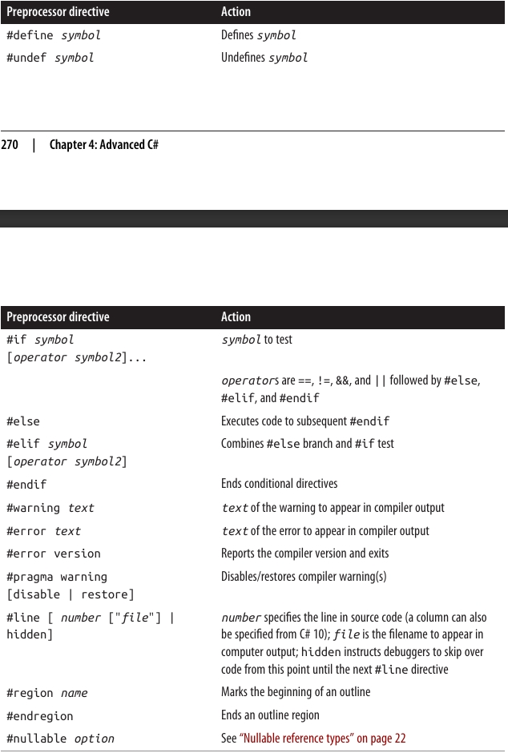

فصل چهارم: سی شارپ پیشرفته
در این فصل، به سراغ مباحث پیشرفته زبان C# میرویم که بر پایه مفاهیمی بنا شدهاند که در فصلهای 2 و 3 بررسی کردیم.
چهار بخش اول را باید به صورت پیوسته و پشت سر هم مطالعه کنید؛ اما بخشهای باقیمانده را میتوانید به هر ترتیبی بخوانید.
Delegates (نمایندگان) 📨
یک delegate یک شیء است که میداند چگونه یک متد را فراخوانی کند.
نوع delegate تعیین میکند که نمونههای delegate میتوانند چه نوع متدهایی را فراخوانی کنند. به طور مشخص، یک delegate نوع بازگشتی متد و انواع پارامترهای متد را تعریف میکند.
مثال: تعریف یک نوع delegate به نام Transformer:
delegate int Transformer(int x);
این delegate با هر متدی که بازگشتی از نوع int داشته باشد و یک پارامتر int بگیرد سازگار است. مثل این:
int Square(int x) { return x * x; }
یا به صورت کوتاهتر (expression-bodied):
int Square(int x) => x * x;
ساختن و استفاده از یک delegate 🛠️
اختصاص یک متد به یک متغیر delegate، باعث ایجاد یک نمونه delegate میشود:
Transformer t = Square;
فراخوانی یک نمونه delegate دقیقاً مثل فراخوانی یک متد است:
int answer = t(3); // answer برابر با 9
مثال کامل:
Transformer t = Square; // ایجاد نمونه delegate
int result = t(3); // فراخوانی delegate
Console.WriteLine(result); // خروجی: 9
int Square(int x) => x * x;
delegate int Transformer(int x); // تعریف نوع delegate
مفهوم اصلی delegate 🎯
یک نمونه delegate واقعاً به عنوان نمایندهی caller عمل میکند:
caller (فراخواننده) delegate را فراخوانی میکند و سپس delegate، متد هدف را فراخوانی میکند.
این واسطهگری (indirection) باعث میشود که caller از متد هدف جدا و مستقل باشد.
نکتههای مهم ✅
دستور:
Transformer t = Square;
در واقع یک میانبُر (shorthand) برای این است:
Transformer t = new Transformer(Square);
عبارت:
t(3)
میانبُری است برای:
t.Invoke(3)
از نظر فنی، وقتی به Square بدون پرانتز و آرگومان اشاره میکنیم، در حال مشخص کردن یک method group هستیم.
اگر متد overload شده باشد، کامپایلر C# بر اساس امضای delegate انتخاب میکند که کدام overload مناسب است.
Delegate شبیه به Callback 📞
یک delegate مشابه چیزی است که در اصطلاح عمومی callback نامیده میشود.
این مفهوم سازههایی مثل function pointers در زبان C را نیز در بر میگیرد.
نوشتن متدهای پلاگین با استفاده از Delegateها ✨
یک متغیر از نوع delegate در زمان اجرا (runtime) به یک متد نسبت داده میشود. این ویژگی برای نوشتن متدهای پلاگین (plug-in methods) بسیار کاربردی است.
در مثال زیر، ما یک متد کمکی (utility method) به نام Transform داریم که یک عمل transform را روی هر عضو از یک آرایهی عددی (integer array) اعمال میکند. این متد Transform یک پارامتر از نوع delegate دارد که میتوانید برای مشخص کردن پلاگین transform از آن استفاده کنید:
int[] values = { 1, 2, 3 };
Transform (values, Square); // اتصال متد Square به Transform
foreach (int i in values)
Console.Write (i + " "); // خروجی: 1 4 9
void Transform (int[] values, Transformer t)
{
for (int i = 0; i < values.Length; i++)
values[i] = t (values[i]);
}
int Square (int x) => x * x;
int Cube (int x) => x * x * x;
delegate int Transformer (int x);
🔹 در اینجا اگر در خط دوم بهجای Square از Cube استفاده کنیم، تبدیل روی اعداد بهصورت مکعب (توان سوم) انجام میشود.
🔹 متد Transform یک higher-order function است، چون یک تابع (delegate) را بهعنوان آرگومان میگیرد. (هر متدی که یک delegate را برگرداند نیز یک higher-order function محسوب میشود.)
اهداف متد در Delegateها: Instance و Static ⚡
یک متد هدف (target method) برای یک delegate میتواند محلی (local)، ایستا (static) یا نمونهای (instance) باشد.
مثال یک متد static بهعنوان هدف delegate:
Transformer t = Test.Square;
Console.WriteLine (t(10)); // 100
class Test
{
public static int Square (int x) => x * x;
}
delegate int Transformer (int x);
مثال یک متد instance بهعنوان هدف delegate:
Test test = new Test();
Transformer t = test.Square;
Console.WriteLine (t(10)); // 100
class Test
{
public int Square (int x) => x * x;
}
delegate int Transformer (int x);
🔑 زمانی که یک متد instance به یک delegate اختصاص داده میشود، آن delegate فقط به خود متد اشاره نمیکند، بلکه نمونهای از کلاس که متد به آن تعلق دارد را هم نگهداری میکند.
خاصیت Target در کلاس System.Delegate 🎯
کلاس System.Delegate یک ویژگی به نام Target دارد که این نمونه (instance) را نشان میدهد (و اگر delegate به یک متد static اشاره کند، مقدارش null خواهد بود).
مثال:
MyReporter r = new MyReporter();
r.Prefix = "%Complete: ";
ProgressReporter p = r.ReportProgress;
p(99); // %Complete: 99
Console.WriteLine (p.Target == r); // True
Console.WriteLine (p.Method); // Void ReportProgress(Int32)
r.Prefix = "";
p(99); // 99
public delegate void ProgressReporter (int percentComplete);
class MyReporter
{
public string Prefix = "";
public void ReportProgress (int percentComplete)
=> Console.WriteLine (Prefix + percentComplete);
}
✅ چون نمونه (instance) در خاصیت Target ذخیره میشود، طول عمر آن حداقل به اندازه طول عمر delegate گسترش مییابد.
🔖 جمعبندی:
-
Delegateها به ما اجازه میدهند که متدها را مثل متغیرها پاس بدهیم.
-
میتوانند به متدهای static یا instance متصل شوند.
-
خاصیت Target تضمین میکند که نمونه مربوط به متد instance تا وقتی delegate زنده است، باقی بماند.
💡 این مفهوم پایهای در طراحی پلاگینها، کالبکها و برنامهنویسی شیءگراست.
نمایندگان چندپخشی (Multicast Delegates) 🎯
تمام نمونههای delegate در سیشارپ دارای قابلیت چندپخشی (multicast) هستند. این یعنی یک نمونهی delegate میتواند نه فقط به یک متد، بلکه به یک لیست از متدها اشاره کند.
عملگرهای + و += برای ترکیب کردن نمونههای delegate استفاده میشوند:
SomeDelegate d = SomeMethod1;
d += SomeMethod2;
خط آخر از نظر عملکرد دقیقاً معادل این است:
d = d + SomeMethod2;
اکنون وقتی d فراخوانی شود، هم SomeMethod1 و هم SomeMethod2 اجرا میشوند.
✅ توجه داشته باشید که متدها به ترتیبی که اضافه شدهاند فراخوانی میشوند.
عملگرهای - و -= هم برای حذف یک متد از لیست متدهای یک delegate استفاده میشوند:
d -= SomeMethod1;
اکنون فراخوانی d باعث میشود فقط SomeMethod2 اجرا شود.
📌 نکته مهم:
- وقتی روی یک متغیر delegate که مقدارش null است، عمل + یا += انجام دهید، باز هم کار میکند و معادل این است که به آن مقدار جدید بدهید:
SomeDelegate d = null;
d += SomeMethod1; // معادل با: d = SomeMethod1 وقتی d برابر null است
- به طور مشابه، اگر روی یک delegate که فقط یک متد را نگه داشته باشد عمل -= کنید، نتیجهاش معادل اختصاص مقدار null به آن متغیر خواهد بود.
⚡ یک نکته مهم دیگر:
Delegates در سیشارپ immutable هستند. یعنی وقتی شما += یا -= را استفاده میکنید، در واقع یک نمونهی جدید از delegate ساخته میشود و به متغیر موجود اختصاص داده میشود.
📢 اگر یک delegate چندپخشی (multicast delegate) دارای نوع بازگشتی غیر از void باشد، مقدار بازگشتی که شما دریافت میکنید مربوط به آخرین متدی است که اجرا شده است. متدهای قبلی همچنان اجرا میشوند، اما مقدار بازگشتی آنها نادیده گرفته میشود.
(به همین دلیل، در بیشتر مواردی که از multicast delegate استفاده میشود، آنها void برمیگردانند.)
🧩 تمام انواع delegate به طور ضمنی از System.MulticastDelegate ارثبری میکنند که خودش از System.Delegate ارثبری میکند.
کامپایلر سیشارپ تمام عملیات +، -، += و -= روی delegateها را به متدهای استاتیک Combine و Remove از کلاس System.Delegate تبدیل میکند.
مثال Multicast Delegate 🛠️
فرض کنید یک متدی نوشتهاید که اجرای آن زمان زیادی میبرد. این متد میتواند به طور منظم میزان پیشرفت کار را به فراخواننده گزارش دهد؛ این کار با فراخوانی یک delegate انجام میشود.
در مثال زیر، متد HardWork یک پارامتر از نوع delegate به نام ProgressReporter دریافت میکند و از آن برای نشان دادن پیشرفت استفاده میکند:
public delegate void ProgressReporter(int percentComplete);
public class Util
{
public static void HardWork(ProgressReporter p)
{
for (int i = 0; i < 10; i++)
{
p(i * 10); // فراخوانی delegate
System.Threading.Thread.Sleep(100); // شبیهسازی کار سنگین
}
}
}
برای مانیتور کردن میزان پیشرفت، میتوانیم یک نمونهی Multicast Delegate به نام p بسازیم تا پیشرفت همزمان توسط دو متد مستقل بررسی شود:
ProgressReporter p = WriteProgressToConsole;
p += WriteProgressToFile;
Util.HardWork(p);
void WriteProgressToConsole(int percentComplete)
=> Console.WriteLine(percentComplete);
void WriteProgressToFile(int percentComplete)
=> System.IO.File.WriteAllText("progress.txt",
percentComplete.ToString());
🔍 در اینجا چه اتفاقی میافتد؟
-
ابتدا یک delegate از نوع ProgressReporter ساخته میشود و به متد WriteProgressToConsole اشاره میکند.
-
سپس با عملگر +=، متد WriteProgressToFile هم به آن اضافه میشود.
یعنی delegate p اکنون یک multicast delegate است. -
هر بار که متد HardWork پیشرفت را گزارش میدهد (p(i * 10))، هر دو متد اجرا میشوند:
-
WriteProgressToConsole مقدار پیشرفت را روی کنسول چاپ میکند.
-
WriteProgressToFile مقدار پیشرفت را در یک فایل progress.txt ذخیره میکند.
📊 نتیجه نهایی:
-
شما همزمان در کنسول میبینید که پیشرفت کار چند درصد است.
-
یک فایل متنی هم دارید که همان اطلاعات را ذخیره میکند.
انواع Delegate عمومی (Generic Delegate Types) ⚡
یک delegate میتواند شامل پارامترهای عمومی (Generic Type Parameters) باشد:
public delegate T Transformer<T>(T arg);
با چنین تعریفی میتوانیم یک متد ابزار عمومی (Utility Method) بنویسیم که روی هر نوع دادهای کار کند:
int[] values = { 1, 2, 3 };
Util.Transform(values, Square); // اتصال متد Square
foreach (int i in values)
Console.Write(i + " "); // خروجی: 1 4 9
int Square(int x) => x * x;
public class Util
{
public static void Transform<T>(T[] values, Transformer<T> t)
{
for (int i = 0; i < values.Length; i++)
values[i] = t(values[i]);
}
}
Delegates آماده: Func و Action ✅
با معرفی generic delegates، این امکان فراهم شد که مجموعهای کوچک از delegateها طراحی شوند که آنقدر عمومی و انعطافپذیر باشند که برای متدهایی با هر نوع خروجی و هر تعداد (معقول) آرگومان قابل استفاده باشند.
این delegateها همان Func و Action هستند که در فضای نام System تعریف شدهاند:
delegate TResult Func<out TResult>();
delegate TResult Func<in T, out TResult>(T arg);
delegate TResult Func<in T1, in T2, out TResult>(T1 arg1, T2 arg2);
// ... ادامه دارد تا 16 پارامتر
delegate void Action();
delegate void Action<in T>(T arg);
delegate void Action<in T1, in T2>(T1 arg1, T2 arg2);
// ... ادامه دارد تا 16 پارامتر
📌 اینها بسیار عمومی و قدرتمند هستند.
جایگزینی Transformer با Func 🔄
در مثال قبلی، به جای تعریف delegate اختصاصی Transformer، میتوانستیم از Func استفاده کنیم:
public static void Transform<T>(T[] values, Func<T, T> transformer)
{
for (int i = 0; i < values.Length; i++)
values[i] = transformer(values[i]);
}
در اینجا:
-
Func<T, T> یعنی یک delegate که یک ورودی از نوع T میگیرد و خروجی هم از همان نوع T برمیگرداند.
-
دقیقاً همان چیزی است که قبلاً با Transformer
ساخته بودیم.
محدودیتها 🚧
تنها سناریوهای عملی که Func و Action پوشش نمیدهند، مواردی هستند که شامل پارامترهای ref/out یا pointer باشند.
نکته تاریخی 🕰️
زمانی که C# برای اولین بار معرفی شد، هنوز generics وجود نداشت. به همین دلیل، Func و Action هم وجود نداشتند.
به همین خاطر، بخش زیادی از کتابخانهی .NET از delegateهای سفارشی استفاده میکند، نه از Func و Action.
مقایسه Delegateها و Interfaceها ⚔️
هر مسئلهای که با یک delegate حل میشود، میتواند با یک interface هم حل شود.
بهعنوان مثال، میتوانیم نمونهی اولیهمان را با استفاده از یک interface به نام ITransformer بازنویسی کنیم، به جای اینکه از delegate استفاده کنیم:
int[] values = { 1, 2, 3 };
Util.TransformAll(values, new Squarer());
foreach (int i in values)
Console.WriteLine(i);
public interface ITransformer
{
int Transform(int x);
}
public class Util
{
public static void TransformAll(int[] values, ITransformer t)
{
for (int i = 0; i < values.Length; i++)
values[i] = t.Transform(values[i]);
}
}
class Squarer : ITransformer
{
public int Transform(int x) => x * x;
}
چه زمانی delegate انتخاب بهتری از interface است؟ ✅
طراحی با delegate ممکن است انتخاب بهتری باشد اگر یک یا چند مورد زیر برقرار باشند:
-
🔹 interface فقط یک متد تعریف کرده باشد.
-
🔹 نیاز به multicast (اتصال چند متد به یک delegate) داشته باشیم.
-
🔹 یک subscriber مجبور باشد چند بار یک interface را پیادهسازی کند.
بررسی مثال 🔍
در مثال ITransformer:
-
ما نیازی به multicast نداریم.
-
اما interface فقط یک متد (Transform) تعریف کرده است.
-
از طرفی ممکن است بخواهیم چندین تبدیل مختلف (مثلاً مربع یا مکعب) را پیادهسازی کنیم.
در چنین حالتی، اگر از interface استفاده کنیم، مجبور میشویم برای هر تبدیل یک کلاس جداگانه بسازیم، چون یک کلاس فقط یک بار میتواند ITransformer را پیادهسازی کند. این کار دستوپاگیر و تکراری میشود.
مثلاً:
int[] values = { 1, 2, 3 };
Util.TransformAll(values, new Cuber());
foreach (int i in values)
Console.WriteLine(i);
class Squarer : ITransformer
{
public int Transform(int x) => x * x;
}
class Cuber : ITransformer
{
public int Transform(int x) => x * x * x;
}
📌 نتیجه:
-
با delegateها، پیادهسازی سادهتر و منعطفتر است (میتوانیم بهراحتی متدهای مختلفی مثل مربع یا مکعب را پاس بدهیم).
-
با interfaceها، مجبوریم برای هر عملگر یک کلاس جدید بسازیم.
سازگاری Delegate ها ⚖️
سازگاری نوع (Type Compatibility) 🏷️
تمام نوعهای delegate با هم ناسازگار هستند، حتی اگر امضا (signature) آنها یکی باشد:
D1 d1 = Method1;
D2 d2 = d1; // ❌ خطای زمان کامپایل
void Method1() { }
delegate void D1();
delegate void D2();
🔹 اما این حالت مجاز است:
D2 d2 = new D2(d1); // ✅ درست
مقایسهی برابری (Equality) ✅
دو نمونهی delegate وقتی برابر محسوب میشوند که به یک متد یکسان اشاره کنند:
D d1 = Method1;
D d2 = Method1;
Console.WriteLine(d1 == d2); // True
void Method1() { }
delegate void D();
🔹 در مورد multicast delegateها هم، برابری وقتی برقرار است که به همان متدها و به همان ترتیب اشاره کنند.
سازگاری پارامتر (Parameter Compatibility) 🔄
وقتی یک متد را فراخوانی میکنید، میتوانید آرگومانی بدهید که از نوع خاصتر از پارامتر متد باشد. این رفتار معمولی polymorphism است.
به همین دلیل، یک delegate هم میتواند پارامترهایی خاصتر از متد هدف خود داشته باشد. این ویژگی را contravariance مینامند.
مثال:
StringAction sa = new StringAction(ActOnObject);
sa("hello");
void ActOnObject(object o) => Console.WriteLine(o); // خروجی: hello
delegate void StringAction(string s);
🔹 در اینجا StringAction یک متد را با پارامتر string فراخوانی میکند.
🔹 اما متدی که واقعا اجرا میشود (ActOnObject) پارامترش از نوع object است.
🔹 در این حالت، آرگومان string بهطور خودکار تبدیل به object (upcast) میشود.
3. ارتباط با الگوی استاندارد Event 🎯
الگوی استاندارد event در C# طوری طراحی شده است که از contravariance استفاده کند.
-
همهی کلاسهای رویداد از کلاس پایهی مشترک EventArgs ارثبری میکنند.
-
بنابراین میتوانید یک متد داشته باشید که توسط دو delegate مختلف فراخوانی شود:
-
یکی رویداد MouseEventArgs پاس بدهد 🖱️
-
دیگری KeyEventArgs پاس بدهد ⌨️
-
این کار انعطافپذیری بالایی در مدیریت رویدادها به شما میدهد.
📌 خلاصه:
-
delegate type ها حتی با امضای یکسان هم ناسازگار هستند.
-
multicast delegateها برابرند اگر دقیقا همان متدها و ترتیب را داشته باشند.
-
contravariance اجازه میدهد متد هدف، پارامتر عامتر از delegate داشته باشد.
-
event pattern از همین ویژگی برای پشتیبانی از انواع مختلف رویدادها استفاده میکند.
سازگاری نوع بازگشتی در Delegateها (Return Type Compatibility) 🔄
همانطور که وقتی یک متد را فراخوانی میکنید ممکن است نوعی خاصتر از چیزی که انتظار داشتید برگردد (رفتار معمولی polymorphism)؛ در مورد delegateها هم همین موضوع صادق است.
یعنی متد هدف یک delegate میتواند نوع بازگشتی خاصتر از چیزی که delegate تعریف کرده داشته باشد.
این ویژگی را covariance مینامند.
مثال: Covariance در نوع بازگشتی 📝
ObjectRetriever o = new ObjectRetriever(RetrieveString);
object result = o();
Console.WriteLine(result); // hello
string RetrieveString() => "hello";
delegate object ObjectRetriever();
🔹 اینجا ObjectRetriever انتظار دارد متدی که به آن متصل است، یک object برگرداند.
🔹 اما در واقعیت، متد RetrieveString یک string برمیگرداند.
🔹 چون string زیرکلاس object است، این مجاز است ✅.
📌 پس: نوع بازگشتی delegate ها covariant است.
واریانس در Delegateهای جنریک ⚙️
در فصل ۳ گفتیم که اینترفیسهای جنریک میتوانند از covariant و contravariant استفاده کنند.
این قابلیت برای delegateهای جنریک هم وجود دارد.
قوانین خوب برای تعریف delegate جنریک:
اگر پارامتر نوع (Type Parameter) فقط در خروجی استفاده میشود → با out (covariant) علامتگذاری شود.
اگر پارامتر نوع فقط در ورودی استفاده میشود → با in (contravariant) علامتگذاری شود.
مثال ۱: Covariance در جنریکها (با Func) 📤
در فضای نام System داریم:
delegate TResult Func<out TResult>();
این باعث میشود بتوانیم بنویسیم:
Func<string> x = () => "Hello!";
Func<object> y = x; // ✅ مجاز به خاطر covariance
🔹 یعنی میتوانیم Func
مثال ۲: Contravariance در جنریکها (با Action) 📥
باز هم در فضای نام System:
delegate void Action<in T>(T arg);
این باعث میشود:
Action<object> x = obj => Console.WriteLine(obj);
Action<string> y = x; // ✅ مجاز به خاطر contravariance
🔹 یعنی میتوانیم Action
📌 خلاصه:
-
نوع بازگشتی delegate میتواند خاصتر از نوع تعریفشده باشد → این covariance است.
-
در delegate جنریک:
-
نوع خروجی (out) → covariant 📤
-
نوع ورودی (in) → contravariant 📥
-
این باعث میشود تبدیلها بین delegateها بهصورت طبیعی و بر اساس ارثبری انجام شوند.
رویدادها (Events)
هنگام استفاده از delegates، دو نقش معمولاً ظاهر میشوند: broadcaster و subscriber.
- Broadcaster نوعی است که دارای یک فیلد delegate میباشد. این نوع تصمیم میگیرد که چه زمانی پیام را پخش کند، با invoke کردن delegate.
- Subscribers دریافتکنندگان هدف متد هستند. یک subscriber تصمیم میگیرد چه زمانی شروع به گوش دادن کند و چه زمانی آن را متوقف کند، با استفاده از عملگرهای
+=و-=روی delegate مربوط به broadcaster. یک subscriber درباره دیگر subscribers اطلاعی ندارد و در عملکرد آنها دخالتی نمیکند.
رویدادها در C# پیشرفته ⚡
رویدادها یک ویژگی زبانی هستند که این الگو را رسمی میکنند. یک event یک ساختار است که تنها زیرمجموعهای از قابلیتهای delegate را که برای مدل broadcaster/subscriber لازم است، در معرض قرار میدهد. هدف اصلی رویدادها جلوگیری از دخالت subscribers در عملکرد یکدیگر است.
سادهترین روش برای تعریف یک رویداد، استفاده از کلیدواژه event قبل از یک عضو delegate است:
// تعریف delegate
public delegate void PriceChangedHandler(decimal oldPrice, decimal newPrice);
public class Broadcaster
{
// تعریف رویداد
public event PriceChangedHandler PriceChanged;
}
کدی که داخل نوع Broadcaster قرار دارد، دسترسی کامل به PriceChanged دارد و میتواند آن را مانند یک delegate معمولی مدیریت کند. کدهای خارج از Broadcaster تنها میتوانند عملیات += و -= را روی رویداد PriceChanged انجام دهند.
✅ ادامهی متن را ارسال کنید تا ترجمه بعدی را آماده کنم.
چگونه رویدادها در درون کار میکنند؟ 🔍
وقتی یک رویداد به شکل زیر تعریف میکنید:
public class Broadcaster
{
public event PriceChangedHandler PriceChanged;
}
سه اتفاق در پشت صحنه رخ میدهد:
1️⃣ ابتدا، کامپایلر تعریف رویداد را به چیزی شبیه به کد زیر ترجمه میکند:
PriceChangedHandler priceChanged; // delegate خصوصی
public event PriceChangedHandler PriceChanged
{
add { priceChanged += value; }
remove { priceChanged -= value; }
}
کلیدواژههای add و remove نشاندهنده accessorهای رویداد صریح هستند—که عملکردی شبیه به accessorهای property دارند. بعداً درباره نحوه نوشتن اینها توضیح خواهیم داد.
2️⃣ دوم، کامپایلر داخل کلاس Broadcaster به دنبال ارجاعات به PriceChanged میگردد که عملیات دیگری غیر از += یا -= انجام میدهند و آنها را به فیلد delegate زیرین یعنی priceChanged هدایت میکند.
3️⃣ سوم، کامپایلر عملیات += و -= روی رویداد را به فراخوانی add و remove accessorهای رویداد ترجمه میکند. جالب است بدانید که این کار باعث میشود رفتار += و -= وقتی روی رویدادها اعمال میشوند، منحصربهفرد باشد: برخلاف سایر سناریوها، اینها تنها یک میانبر برای + و - به همراه انتساب نیستند.
مثالی را در نظر بگیرید 📈
کلاس Stock رویداد PriceChanged خود را هر بار که قیمت سهام تغییر میکند، فعال میکند:
public delegate void PriceChangedHandler(decimal oldPrice, decimal newPrice);
public class Stock
{
string symbol;
decimal price;
public Stock(string symbol) => this.symbol = symbol;
public event PriceChangedHandler PriceChanged;
public decimal Price
{
get => price;
set
{
if (price == value) return; // خروج اگر چیزی تغییر نکرده
decimal oldPrice = price;
price = value;
if (PriceChanged != null) // اگر لیست فراخوانی خالی نیست
PriceChanged(oldPrice, price); // رویداد فعال شود
}
}
}
اگر کلیدواژه event را حذف کنیم و PriceChanged به یک فیلد معمولی delegate تبدیل شود، باز هم مثال ما همان نتایج را خواهد داد. اما کلاس Stock کمتر مقاوم خواهد بود، زیرا subscribers میتوانند با یکدیگر تداخل ایجاد کنند، مثلاً:
- جایگزین کردن دیگر subscribers با انتساب مجدد PriceChanged به جای استفاده از عملگر
+=. - پاک کردن تمام subscribers با انتساب PriceChanged به
null. - ارسال پیام به subscribers دیگر با invoke کردن delegate.
الگوی استاندارد رویدادها 🛠️
در تقریباً همه مواردی که رویدادها در کتابخانههای .NET تعریف میشوند، تعریف آنها مطابق یک الگوی استاندارد است تا یکپارچگی بین کدهای کتابخانه و کاربر حفظ شود. در مرکز این الگو، کلاس System.EventArgs قرار دارد؛ یک کلاس از پیش تعریفشده در .NET که هیچ عضوی ندارد (به جز فیلد استاتیک Empty). EventArgs کلاس پایهای برای انتقال اطلاعات مربوط به یک رویداد است.
در مثال Stock ما، برای انتقال قیمت قدیمی و جدید هنگام فعال شدن رویداد PriceChanged، کلاس EventArgs را به صورت زیر subclass میکنیم:
public class PriceChangedEventArgs : System.EventArgs
{
public readonly decimal LastPrice;
public readonly decimal NewPrice;
public PriceChangedEventArgs(decimal lastPrice, decimal newPrice)
{
LastPrice = lastPrice;
NewPrice = newPrice;
}
}
برای استفاده مجدد، subclass EventArgs معمولاً بر اساس اطلاعاتی که شامل میشود نامگذاری میشود، نه بر اساس رویدادی که برای آن استفاده میشود. دادهها معمولاً به صورت property یا فیلد فقطخواندنی ارائه میشوند.
انتخاب یا تعریف delegate برای رویداد 🎯
سه قاعده وجود دارد:
1️⃣ نوع بازگشتی باید void باشد.
2️⃣ دو آرگومان دریافت کند: آرگومان اول از نوع object و آرگومان دوم یک subclass از EventArgs. آرگومان اول نشاندهنده broadcaster و آرگومان دوم شامل اطلاعات اضافی برای انتقال است.
3️⃣ نام delegate باید با EventHandler پایان یابد.
.NET یک delegate عمومی به نام System.EventHandler<> برای کمک به این کار تعریف کرده است:
public delegate void EventHandler<TEventArgs>(object source, TEventArgs e);
قبل از وجود genericها در زبان (قبل از C# 2.0)، باید delegate سفارشی را به صورت زیر مینوشتیم:
public delegate void PriceChangedHandler(object sender, PriceChangedEventArgs e);
به دلایل تاریخی، بیشتر رویدادها در کتابخانههای .NET از این روش استفاده میکنند.
تعریف رویداد با delegate انتخابشده 🔧
public class Stock
{
...
public event EventHandler<PriceChangedEventArgs> PriceChanged;
}
نوشتن متد محافظتشده و virtual برای فعال کردن رویداد
نام این متد باید همان نام رویداد باشد، با پیشوند On، و یک آرگومان EventArgs دریافت کند:
public class Stock
{
...
public event EventHandler<PriceChangedEventArgs> PriceChanged;
protected virtual void OnPriceChanged(PriceChangedEventArgs e)
{
if (PriceChanged != null) PriceChanged(this, e);
}
}
برای عملکرد مقاوم در سناریوهای چندنخی (multithreaded)، بهتر است delegate را قبل از تست و فراخوانی به یک متغیر موقت انتساب دهید:
var temp = PriceChanged;
if (temp != null) temp(this, e);
همچنین میتوان با استفاده از null-conditional operator همان کار را بدون متغیر موقت انجام داد:
PriceChanged?.Invoke(this, e);
این روش هم thread-safe و هم مختصر است و بهترین روش عمومی برای فراخوانی رویدادها محسوب میشود.
مثال کامل 💻
using System;
Stock stock = new Stock("THPW");
stock.Price = 27.10M;
// ثبت برای رویداد PriceChanged
stock.PriceChanged += stock_PriceChanged;
stock.Price = 31.59M;
void stock_PriceChanged(object sender, PriceChangedEventArgs e)
{
if ((e.NewPrice - e.LastPrice) / e.LastPrice > 0.1M)
Console.WriteLine("Alert, 10% stock price increase!");
}
public class PriceChangedEventArgs : EventArgs
{
public readonly decimal LastPrice;
public readonly decimal NewPrice;
public PriceChangedEventArgs(decimal lastPrice, decimal newPrice)
{
LastPrice = lastPrice; NewPrice = newPrice;
}
}
public class Stock
{
string symbol;
decimal price;
public Stock(string symbol) => this.symbol = symbol;
public event EventHandler<PriceChangedEventArgs> PriceChanged;
protected virtual void OnPriceChanged(PriceChangedEventArgs e)
{
PriceChanged?.Invoke(this, e);
}
public decimal Price
{
get => price;
set
{
if (price == value) return;
decimal oldPrice = price;
price = value;
OnPriceChanged(new PriceChangedEventArgs(oldPrice, price));
}
}
}
استفاده از EventHandler غیر عمومی
وقتی رویداد نیاز به انتقال اطلاعات اضافی ندارد، میتوان از EventHandler غیر generic استفاده کرد. در این مثال، کلاس Stock بازنویسی شده تا رویداد PriceChanged پس از تغییر قیمت فعال شود و تنها نیاز است بدانیم رویداد رخ داده است، بدون نیاز به اطلاعات اضافی. همچنین از EventArgs.Empty استفاده میکنیم تا از ایجاد غیرضروری یک نمونه EventArgs جلوگیری شود:
public class Stock
{
string symbol;
decimal price;
public Stock(string symbol) { this.symbol = symbol; }
public event EventHandler PriceChanged;
protected virtual void OnPriceChanged(EventArgs e)
{
PriceChanged?.Invoke(this, e);
}
public decimal Price
{
get { return price; }
set
{
if (price == value) return;
price = value;
OnPriceChanged(EventArgs.Empty);
}
}
}
Accessorهای رویدادها 🔑
Accessorهای یک رویداد، پیادهسازیهای عملگرهای += و -= آن هستند. به طور پیشفرض، این accessors به صورت ضمنی توسط کامپایلر پیادهسازی میشوند. به مثال زیر توجه کنید:
public event EventHandler PriceChanged;
کامپایلر این را به شکل زیر تبدیل میکند:
- یک فیلد delegate خصوصی
- یک جفت تابع accessor عمومی برای رویداد (add_PriceChanged و remove_PriceChanged) که عملیات
+=و-=را به فیلد delegate خصوصی هدایت میکنند
شما میتوانید این روند را با تعریف explicit event accessors به دست بگیرید. در اینجا پیادهسازی دستی رویداد PriceChanged از مثال قبلی آمده است:
private EventHandler priceChanged; // تعریف یک delegate خصوصی
public event EventHandler PriceChanged
{
add { priceChanged += value; }
remove { priceChanged -= value; }
}
این مثال از نظر عملکرد با پیادهسازی پیشفرض C# یکسان است (به جز اینکه C# همچنین ایمنی در برابر چندنخی را با الگوریتم lock-free compare-and-swap تضمین میکند). با تعریف دستی accessors، به C# میگوییم که منطق پیشفرض فیلد و accessor را تولید نکند.
با استفاده از explicit event accessors، میتوان استراتژیهای پیچیدهتری برای ذخیره و دسترسی به delegate زیرین اعمال کرد. سه سناریو که این کاربرد دارد:
1️⃣ وقتی accessors تنها به عنوان واسطه برای کلاس دیگری هستند که رویداد را پخش میکند.
2️⃣ وقتی کلاس تعداد زیادی رویداد دارد اما اغلب تنها تعداد کمی subscriber وجود دارد، مثل کنترلهای ویندوز. در این موارد بهتر است delegateهای subscribers را در یک dictionary ذخیره کنیم، زیرا dictionary حافظه کمتری نسبت به دهها فیلد delegate خالی مصرف میکند.
3️⃣ هنگام پیادهسازی explicit یک interface که رویدادی را تعریف کرده است.
نمونهای برای مورد سوم:
public interface IFoo { event EventHandler Ev; }
class Foo : IFoo
{
private EventHandler ev;
event EventHandler IFoo.Ev
{
add { ev += value; }
remove { ev -= value; }
}
}
بخشهای add و remove یک رویداد به متدهای add_XXX و remove_XXX کامپایل میشوند.
Modifierهای رویدادها ⚡
مثل متدها، رویدادها میتوانند virtual، overridden، abstract یا sealed باشند. همچنین میتوانند static باشند:
public class Foo
{
public static event EventHandler<EventArgs> StaticEvent;
public virtual event EventHandler<EventArgs> VirtualEvent;
}
Lambda Expressions λ
یک lambda expression متدی بدون نام است که به جای یک instance delegate نوشته میشود. کامپایلر بلافاصله آن را به یکی از موارد زیر تبدیل میکند:
- یک instance delegate
- یا یک expression tree از نوع
Expression<TDelegate>که کد داخل lambda را به صورت یک مدل شیء قابل پیمایش نمایش میدهد. این اجازه میدهد lambda بعداً در زمان اجرا تفسیر شود.
مثال:
Transformer sqr = x => x * x;
Console.WriteLine(sqr(3)); // خروجی: 9
delegate int Transformer(int i);
کامپایلر lambdaهای این نوع را با نوشتن یک متد خصوصی و انتقال کد expression به آن متد حل میکند.
فرم کلی یک lambda:
(parameters) => expression-or-statement-block
اگر فقط یک پارامتر با نوع قابل استنتاج داشته باشیم، میتوان پرانتزها را حذف کرد.
مثال:
x => x * x;
هر پارامتر lambda متناظر با پارامتر delegate است و نوع expression (که ممکن است void باشد) متناظر با نوع بازگشتی delegate است.
میتوان expression را به صورت یک بلوک statement نیز نوشت:
x => { return x * x; };
اغلب lambdaها همراه با Func و Action استفاده میشوند:
Func<int,int> sqr = x => x * x;
مثال با دو پارامتر:
Func<string,string,int> totalLength = (s1, s2) => s1.Length + s2.Length;
int total = totalLength("hello", "world"); // total = 10
اگر نیازی به استفاده از پارامترها نیست، میتوان آنها را با underscore دور انداخت (از C# 9):
Func<string,string,int> totalLength = (_,_) => ...
مثال بدون آرگومان:
Func<string> greeter = () => "Hello, world";
از C# 10 به بعد، میتوان از implicit typing برای lambda استفاده کرد:
var greeter = () => "Hello, world";
مشخص کردن صریح نوع پارامتر و نوع بازگشتی Lambda 🔧
کامپایلر معمولاً میتواند نوع پارامترهای lambda را به صورت زمینهای استنتاج کند. وقتی این امکان وجود نداشته باشد، باید نوع هر پارامتر را به صورت صریح مشخص کنید. به دو متد زیر توجه کنید:
void Foo<T>(T x) { }
void Bar<T>(Action<T> a) { }
کد زیر کامپایل نمیشود، زیرا کامپایلر نمیتواند نوع x را استنتاج کند:
Bar(x => Foo(x)); // نوع x چیست؟
میتوان با مشخص کردن صریح نوع x مشکل را حل کرد:
Bar((int x) => Foo(x));
این مثال ساده را میتوان به دو روش دیگر نیز اصلاح کرد:
Bar<int>(x => Foo(x)); // مشخص کردن type parameter برای Bar
Bar<int>(Foo); // همانند بالا، با استفاده از method group
مثالی دیگر از استفاده explicit برای نوع پارامتر (C# 10):
var sqr = (int x) => x * x;
کامپایلر sqr را به نوع Func<int,int> استنتاج میکند. بدون مشخص کردن int، استنتاج نوع شکست میخورد: کامپایلر میداند که sqr باید از نوع Func<T,T> باشد، اما نمیداند T چیست.
از C# 10 به بعد میتوان نوع بازگشتی lambda را نیز مشخص کرد:
var sqr = int (int x) => x;
مشخص کردن نوع بازگشتی میتواند عملکرد کامپایلر را در lambdaهای پیچیده و تو در تو بهبود دهد.
پارامترهای پیشفرض Lambda (C# 12) 🎯
مانند متدهای معمولی که میتوانند پارامتر اختیاری داشته باشند:
void Print(string message = "") => Console.WriteLine(message);
lambdaها نیز میتوانند پارامتر اختیاری داشته باشند:
var print = (string message = "") => Console.WriteLine(message);
print("Hello");
print();
این ویژگی برای کتابخانههایی مانند ASP.NET Minimal API مفید است.
دسترسی به متغیرهای خارجی (Outer Variables) 🌐
یک lambda میتواند به هر متغیری که در محل تعریفش قابل دسترسی است، ارجاع دهد. این متغیرها outer variables نامیده میشوند و میتوانند شامل متغیرهای محلی، پارامترها و فیلدها باشند:
int factor = 2;
Func<int, int> multiplier = n => n * factor;
Console.WriteLine(multiplier(3)); // خروجی: 6
متغیرهایی که توسط lambda ارجاع میشوند، captured variables نامیده میشوند. lambda که متغیرها را capture میکند، closure نامیده میشود.
متغیرهای capture شده هنگام فراخوانی delegate ارزیابی میشوند، نه هنگام capture شدن:
int factor = 2;
Func<int, int> multiplier = n => n * factor;
factor = 10;
Console.WriteLine(multiplier(3)); // خروجی: 30
lambdaها میتوانند خودشان متغیرهای capture شده را بهروزرسانی کنند:
int seed = 0;
Func<int> natural = () => seed++;
Console.WriteLine(natural()); // 0
Console.WriteLine(natural()); // 1
Console.WriteLine(seed); // 2
متغیرهای capture شده طول عمرشان تا طول عمر delegate ادامه پیدا میکند. مثال:
static Func<int> Natural()
{
int seed = 0;
return () => seed++; // برمیگرداند یک closure
}
static void Main()
{
Func<int> natural = Natural();
Console.WriteLine(natural()); // 0
Console.WriteLine(natural()); // 1
}
اگر متغیر محلی را داخل خود lambda بسازیم، هر فراخوانی delegate یک متغیر جدید ایجاد میکند:
static Func<int> Natural()
{
return () => { int seed = 0; return seed++; };
}
static void Main()
{
Func<int> natural = Natural();
Console.WriteLine(natural()); // 0
Console.WriteLine(natural()); // 0
}
پیادهسازی capture داخلی با hoisting انجام میشود: متغیرهای capture شده به فیلدهای یک کلاس خصوصی منتقل میشوند و هنگام فراخوانی متد، کلاس ایجاد شده و به delegate وابسته میشود.
Lambdaهای استاتیک ⚡
زمانی که lambda متغیرهای محلی، پارامترها، فیلدهای instance یا this را capture میکند، کامپایلر ممکن است کلاس خصوصی ایجاد کند تا ارجاع به دادهها ذخیره شود. این باعث مصرف حافظه میشود.
از C# 9 به بعد میتوان با static کردن lambda، local function یا anonymous method، از capture شدن state جلوگیری کرد:
Func<int, int> multiplier = static n => n * 2;
اگر بعداً lambda بخواهد متغیری را capture کند، کامپایلر خطا میدهد:
int factor = 2;
Func<int, int> multiplier = static n => n * factor; // کامپایل نمیشود
lambda بدون capture، یک instance delegate کش شده را مجدداً استفاده میکند و هزینهای ندارد.
lambdaهای استاتیک هنوز میتوانند به متغیرها و ثابتهای static دسترسی داشته باشند. static تنها نقش بررسی دارد و تاثیری بر IL تولیدشده ندارد؛ بدون آن، کامپایلر در صورت نیاز closure تولید میکند، اما حتی آن زمان ترفندهایی برای کاهش هزینه دارد.
گرفتن متغیرهای تکرار (Capturing iteration variables) 🔄
وقتی در یک حلقهی for متغیر تکرار (iteration variable) را Capture میکنید، زبان C# با آن طوری رفتار میکند که انگار بیرون از حلقه تعریف شده باشد. یعنی در هر تکرار، همان متغیر گرفته میشود. به همین دلیل برنامهی زیر بهجای نمایش 012، مقدار 333 را چاپ میکند:
Action[] actions = new Action[3];
for (int i = 0; i < 3; i++)
actions[i] = () => Console.Write(i);
foreach (Action a in actions) a(); // 333
هر closure (بخش پررنگ شده) همان متغیر i را میگیرد. این منطقی است، چون i متغیری است که مقدارش بین تکرارهای حلقه باقی میماند؛ حتی میتوانید داخل بدنهی حلقه، مقدار i را تغییر دهید. نتیجه این است که وقتی delegateها بعداً فراخوانی میشوند، همگی مقدار i در لحظهی فراخوانی را میبینند، یعنی 3. برای درک بهتر، حلقه را اینطور بازنویسی کنید:
Action[] actions = new Action[3];
int i = 0;
actions[0] = () => Console.Write(i);
i = 1;
actions[1] = () => Console.Write(i);
i = 2;
actions[2] = () => Console.Write(i);
i = 3;
foreach (Action a in actions) a(); // 333
راهحل برای نمایش 012 این است که متغیر تکرار را به یک متغیر محلی جدید که در همان محدودهی حلقه قرار دارد، انتساب دهیم:
Action[] actions = new Action[3];
for (int i = 0; i < 3; i++)
{
int loopScopedi = i;
actions[i] = () => Console.Write(loopScopedi);
}
foreach (Action a in actions) a(); // 012
چون در هر تکرار، یک متغیر جدید loopScopedi ساخته میشود، هر closure یک متغیر متفاوت را میگیرد. ✨
نکته: قبل از نسخهی C# 5.0، حلقههای
foreachهم همین رفتار را داشتند و باعث سردرگمی میشدند. چون متغیر درforeachتغییرناپذیر است، انتظار میرفت محلی باشد، ولی نبود. خوشبختانه این موضوع اصلاح شده و حالا میتوانید متغیرهایforeachرا بدون نگرانی Capture کنید. ✅
مقایسهی Lambda Expressions و Local Methods 🆚
عملکرد local methods (بخش «Local methods» در صفحه 106) شباهت زیادی به lambda expressions دارد، اما سه مزیت دارند:
- میتوانند بازگشتی (recursive) باشند (خودشان را صدا بزنند) بدون نیاز به روشهای پیچیده.
- نیاز به مشخص کردن نوع delegate ندارند و کد شلوغ نمیشود.
- کارایی بیشتری دارند چون سربار delegate را حذف میکنند.
Local methods بهینهتر هستند چون از واسطهی delegate استفاده نمیکنند (این کار باعث صرف مقداری CPU و حافظه میشود). همچنین میتوانند به متغیرهای محلی متد والد دسترسی داشته باشند بدون اینکه کامپایلر مجبور به hoist کردن آنها در یک کلاس مخفی باشد.
اما در بسیاری از موارد شما به delegate نیاز دارید؛ مثل وقتی که میخواهید متدی با پارامتر از نوع delegate را صدا بزنید:
public void Foo(Func<int, bool> predicate) { ... }
(نمونههای بیشتری در فصل 8 خواهید دید.) در این مواقع، استفاده از lambda معمولاً کوتاهتر و تمیزتر است.
متدهای ناشناس (Anonymous Methods) 🕶️
Anonymous methods قابلیتی در C# 2.0 بودند که تا حد زیادی با lambda expressions در C# 3.0 جایگزین شدند. متدهای ناشناس مثل lambda هستند، اما امکانات زیر را ندارند:
- پارامترهای نوعدهی ضمنی (implicitly typed)
- نوشتار به شکل expression (همیشه باید به صورت بلوک بیانیه باشند)
- توانایی تبدیل به Expression Tree با
Expression<T>
مثال:
delegate int Transformer(int i);
Transformer sqr = delegate (int x) { return x * x; };
Console.WriteLine(sqr(3)); // 9
این معادل نوشتار زیر با lambda است:
Transformer sqr = (int x) => { return x * x; };
// یا سادهتر:
Transformer sqr = x => x * x;
متدهای ناشناس هم مثل lambdaها متغیرهای بیرونی را Capture میکنند و حتی میتوانند با کلمهی کلیدی static شبیه lambdaهای استاتیک رفتار کنند.
ویژگی خاص آنها این است که میتوان پارامترها را کاملاً حذف کرد، حتی اگر delegate آنها را انتظار داشته باشد. این برای تعریف event با handler خالی مفید است:
public event EventHandler Clicked = delegate { };
این کار باعث میشود قبل از صدا زدن event نیازی به بررسی null نداشته باشید. همچنین نوشتن زیر هم معتبر است:
// پارامترها حذف شدهاند:
Clicked += delegate { Console.WriteLine("clicked"); };
دستورات try و مدیریت استثناها (try Statements and Exceptions) ⚠️
یک دستور try یک بلوک کد را مشخص میکند که ممکن است خطا رخ دهد یا نیاز به پاکسازی داشته باشد. بلوک try باید حداقل با یک catch یا یک finally (یا هر دو) همراه باشد:
- catch زمانی اجرا میشود که خطا در بلوک try رخ دهد.
- finally همیشه بعد از خروج از try (یا catch) اجرا میشود و معمولاً برای کارهای پاکسازی مثل بستن اتصالات شبکه است.
catch به شیء Exception دسترسی دارد که اطلاعات خطا را نگه میدارد. شما میتوانید خطا را مدیریت کنید یا دوباره پرتاب کنید (برای لاگ کردن یا بالا بردن سطح خطا).
مثال:
try
{
// ممکن است خطا رخ دهد
}
catch (ExceptionA ex)
{
// مدیریت خطای نوع ExceptionA
}
catch (ExceptionB ex)
{
// مدیریت خطای نوع ExceptionB
}
finally
{
// پاکسازی
}
برنامهی زیر را در نظر بگیرید:
int y = Calc(0);
Console.WriteLine(y);
int Calc(int x) => 10 / x;
چون x صفر است، خطای DivideByZeroException رخ میدهد و برنامه متوقف میشود. حالا با try/catch:
try
{
int y = Calc(0);
Console.WriteLine(y);
}
catch (DivideByZeroException ex)
{
Console.WriteLine("x cannot be zero");
}
Console.WriteLine("program completed");
int Calc(int x) => 10 / x;
خروجی:
x cannot be zero
program completed
در عمل، بهتر است خطاهای قابل پیشگیری را قبل از وقوع بررسی کنید، مثلاً تقسیم بر صفر را چک کنید، چون exceptionها هزینهبر هستند (صدها سیکل پردازنده یا بیشتر).
وقتی exception رخ میدهد، CLR بررسی میکند:
- اگر
catchسازگار پیدا شد: همان را اجرا میکند، سپسfinallyو برنامه ادامه مییابد. - اگر پیدا نشد:
finallyاجرا میشود (اگر باشد) و CLR به عقب در stack دنبالtryمیگردد. - اگر هیچ تابعی مسئولیت نگرفت: برنامه متوقف میشود.
بخش catch (بخش گرفتن استثناها) 🛡️
یک catch clause مشخص میکند که چه نوع استثنایی (Exception) باید گرفته شود. این نوع باید یا System.Exception باشد یا یک زیرکلاس از System.Exception.
اگر System.Exception را بگیرید، تمام خطاهای ممکن را خواهید گرفت. این کار در شرایط زیر مفید است:
- وقتی برنامهتان میتواند بدون توجه به نوع خاص استثنا، بهبود یابد.
- وقتی قصد دارید استثنا را دوباره پرتاب کنید (مثلاً بعد از ثبت یا Log کردن آن).
- وقتی هندلر خطای شما آخرین خط دفاعی قبل از پایان برنامه است.
اما در حالت معمول، بهتر است نوعهای خاص استثنا را بگیرید تا مجبور نشوید با شرایطی روبهرو شوید که هندلر شما برای آن طراحی نشده است (مثلاً OutOfMemoryException).
برای مدیریت چند نوع استثنا، میتوانید از چندین بخش catch استفاده کنید (هرچند در این مثال میتوان به جای مدیریت استثنا، بررسی ورودیها را انجام داد):
class Test
{
static void Main (string[] args)
{
try
{
byte b = byte.Parse (args[0]);
Console.WriteLine (b);
}
catch (IndexOutOfRangeException)
{
Console.WriteLine ("Please provide at least one argument");
}
catch (FormatException)
{
Console.WriteLine ("That's not a number!");
}
catch (OverflowException)
{
Console.WriteLine ("You've given me more than a byte!");
}
}
}
برای هر استثنا فقط یک catch اجرا میشود. اگر میخواهید یک هندلر کلی مثل System.Exception داشته باشید، باید هندلرهای خاصتر را قبل از آن قرار دهید.
گاهی نیاز ندارید به ویژگیهای استثنا دسترسی داشته باشید. در این حالت میتوانید متغیر را حذف کنید:
catch (OverflowException) // بدون متغیر
{
...
}
حتی میتوانید هم متغیر و هم نوع را حذف کنید (به این معنی که همه استثناها گرفته میشوند):
catch { ... }
Exception filters (فیلترهای استثنا) 🔍
میتوانید در بخش catch یک فیلتر استثنا با استفاده از کلمه when مشخص کنید:
catch (WebException ex) when (ex.Status == WebExceptionStatus.Timeout)
{
...
}
در این مثال، اگر WebException پرتاب شود، عبارت بولی بعد از when ارزیابی میشود. اگر نتیجه false باشد، این catch نادیده گرفته شده و به سراغ catchهای بعدی میرود.
با exception filters میتوان یک نوع استثنا را چند بار با شرایط متفاوت گرفت:
catch (WebException ex) when (ex.Status == WebExceptionStatus.Timeout)
{ ... }
catch (WebException ex) when (ex.Status == WebExceptionStatus.SendFailure)
{ ... }
عبارت بولی در when حتی میتواند شامل متدهایی باشد که عملیات جانبی انجام میدهند، مانند ثبت خطا برای اهداف عیبیابی.
بخش finally (بخش پایانی) 🧹
بخش finally همیشه اجرا میشود—چه استثنا رخ دهد چه نه، و چه try به طور کامل اجرا شود یا خیر. معمولاً از finally برای کدهای پاکسازی استفاده میکنیم.
بخش finally بعد از هر یک از این حالتها اجرا میشود:
- بعد از اتمام یک catch (یا زمانی که یک استثنای جدید پرتاب شود).
- بعد از اتمام بلوک try (یا زمانی که استثنایی رخ دهد که هندلری برایش وجود ندارد).
- زمانی که کنترل با یک دستور پرش (مثل return یا goto) از بلوک try خارج شود.
تنها مواردی که میتوانند مانع اجرای finally شوند، یک حلقه بینهایت یا پایان ناگهانی پردازش است.
بخش finally به برنامهتان نظم و قطعیت اضافه میکند. در مثال زیر، فایلی که باز شده همیشه بسته میشود، صرفنظر از اینکه:
- بلوک try به طور عادی تمام شود.
- اجرا به دلیل خالی بودن فایل (EndOfStream) زودتر بازگردد.
- یک IOException هنگام خواندن فایل رخ دهد:
void ReadFile()
{
StreamReader reader = null; // در فضای نام System.IO
try
{
reader = File.OpenText ("file.txt");
if (reader.EndOfStream) return;
Console.WriteLine (reader.ReadToEnd());
}
finally
{
if (reader != null) reader.Dispose();
}
}
در این مثال، فایل را با فراخوانی Dispose روی StreamReader بستیم. فراخوانی Dispose روی یک شیء در داخل finally یک روش استاندارد است و در #C با دستور using نیز پشتیبانی میشود.
دستور using ♻️
بسیاری از کلاسها منابع مدیریتنشده (Unmanaged Resources) مانند دستگیرههای فایل (File Handles)، دستگیرههای گرافیکی (Graphics Handles) یا اتصالات پایگاه داده (Database Connections) را در خود جای میدهند. این کلاسها اینترفیس System.IDisposable را پیادهسازی میکنند که تنها یک متد بدون پارامتر به نام Dispose دارد و برای پاکسازی این منابع استفاده میشود.
دستور using یک نگارش ساده و شکیل برای فراخوانی Dispose روی یک شیء پیادهساز IDisposable، درون یک بلوک finally فراهم میکند.
بهعنوان مثال:
using (StreamReader reader = File.OpenText("file.txt"))
{
...
}
این قطعهکد دقیقاً معادل زیر است:
StreamReader reader = File.OpenText("file.txt");
try
{
...
}
finally
{
if (reader != null)
((IDisposable)reader).Dispose();
}
اعلانهای using (Using Declarations) ✍️
اگر در C# 8 و نسخههای بالاتر، براکتها و بلوک کد بعد از دستور using حذف شوند، این دستور تبدیل به اعلان using میشود. در این حالت، منبع زمانی آزاد میشود که اجرای برنامه از بلوک محصورکننده خارج گردد.
مثال:
if (File.Exists("file.txt"))
{
using var reader = File.OpenText("file.txt");
Console.WriteLine(reader.ReadLine());
...
}
در این حالت، reader زمانی Dispose میشود که اجرای برنامه از بلوک if خارج شود.
پرتاب استثنا (Throwing Exceptions) 🚀
استثناها (Exceptions) میتوانند هم توسط زمان اجرا (Runtime) و هم در کدهای کاربر پرتاب شوند. در مثال زیر، متد Display یک استثنای System.ArgumentNullException را پرتاب میکند:
try { Display(null); }
catch (ArgumentNullException ex)
{
Console.WriteLine("Caught the exception");
}
void Display(string name)
{
if (name == null)
throw new ArgumentNullException(nameof(name));
Console.WriteLine(name);
}
از آنجایی که بررسی آرگومان برای مقدار null و پرتاب ArgumentNullException بسیار رایج است، از .NET 6 یک میانبر ارائه شده است:
void Display(string name)
{
ArgumentNullException.ThrowIfNull(name);
Console.WriteLine(name);
}
توجه کنید که در این روش، نیازی به مشخص کردن نام پارامتر نداریم. دلیل این موضوع در بخش CallerArgumentExpression (صفحه 247) توضیح داده خواهد شد.
عبارتهای throw (Throw Expressions) 🎯
عبارت throw میتواند بهعنوان یک عبارت (Expression) در متدهای Expression-bodied استفاده شود:
public string Foo() => throw new NotImplementedException();
همچنین میتواند در یک عبارت شرطی سهتایی (Ternary Conditional Expression) ظاهر شود:
string ProperCase(string value) =>
value == null ? throw new ArgumentException("value") :
value == "" ? "" :
char.ToUpper(value[0]) + value.Substring(1);
پرتاب دوباره استثنا (Rethrowing an Exception) 🔄
میتوانید یک استثنا را گرفته و دوباره پرتاب کنید:
try
{
...
}
catch (Exception ex)
{
// Log error
...
throw; // پرتاب دوباره همان استثنا
}
اگر بهجای throw از throw ex استفاده کنیم، برنامه همچنان کار میکند اما خاصیت StackTrace دیگر مسیر خطای اصلی را نشان نمیدهد.
پرتاب دوباره به شما اجازه میدهد خطا را ثبت (Log) کنید بدون اینکه آن را نادیده بگیرید، یا زمانی که شرایط فراتر از انتظار است، از ادامه مدیریت خطا صرفنظر کنید.
یکی دیگر از سناریوهای رایج، پرتاب یک استثنای خاصتر است:
try
{
// Parse a DateTime from XML element data
}
catch (FormatException ex)
{
throw new XmlException("Invalid DateTime", ex);
}
دقت کنید که هنگام ساخت XmlException، استثنای اصلی ex را بهعنوان آرگومان دوم پاس دادیم. این آرگومان خاصیت InnerException را مقداردهی میکند و در اشکالزدایی کمک زیادی میکند. تقریباً همه انواع استثنا چنین سازندهای دارند.
پرتاب یک استثنای کلیتر (Less-Specific Exception)
این روش زمانی مفید است که در حال عبور از یک مرز اعتماد (Trust Boundary) هستید تا از افشای اطلاعات فنی برای مهاجمان بالقوه جلوگیری کنید.
ویژگیهای کلیدی System.Exception ⚙️
مهمترین ویژگیهای System.Exception به شرح زیر هستند:
-
StackTrace
رشتهای (string) که تمام متدهایی را که از نقطه شروع رخداد استثنا تا بلوک catch فراخوانی شدهاند، نمایش میدهد. -
Message
رشتهای که توضیح خطا را در خود نگه میدارد. -
InnerException
استثنای داخلی (در صورت وجود) که باعث ایجاد استثنای بیرونی شده است. این استثنا خود میتواند شامل InnerException دیگری نیز باشد.
در زبان C# تمام استثناها در زمان اجرا (runtime exceptions) اتفاق میافتند و معادلی برای استثناهای بررسیشده در زمان کامپایل (compile-time checked exceptions) مانند Java وجود ندارد.
انواع رایج استثناها 🚨
انواع زیر از استثناها بهطور گسترده در سراسر CLR و کتابخانههای .NET استفاده میشوند. شما میتوانید آنها را خودتان پرتاب کنید یا از آنها بهعنوان کلاس پایه برای ساخت انواع سفارشی استثنا استفاده نمایید:
-
System.ArgumentException
زمانی پرتاب میشود که یک تابع با آرگومان نامعتبر فراخوانی شود. معمولاً نشاندهنده یک خطای برنامهنویسی است. -
System.ArgumentNullException
زیرکلاس ArgumentException که وقتی یک آرگومان تابع بهطور غیرمنتظره null باشد، پرتاب میشود. -
System.ArgumentOutOfRangeException
زیرکلاس ArgumentException که وقتی یک آرگومان (معمولاً عددی) خیلی بزرگ یا خیلی کوچک باشد، پرتاب میشود. برای مثال، ارسال یک عدد منفی به تابعی که فقط مقادیر مثبت را میپذیرد. -
System.InvalidOperationException
زمانی پرتاب میشود که وضعیت یک شیء برای اجرای موفقیتآمیز متد مناسب نباشد، بدون توجه به مقدار آرگومانها. مثالها شامل خواندن یک فایل بازنشده یا دریافت عنصر بعدی از یک شمارنده (Enumerator) است که لیست زیرین آن در میانه اجرا تغییر کرده است. -
System.NotSupportedException
زمانی پرتاب میشود که یک قابلیت خاص پشتیبانی نمیشود. مثالی مناسب: فراخوانی متد Add روی مجموعهای که IsReadOnly آن true است. -
System.NotImplementedException
زمانی پرتاب میشود که یک تابع هنوز پیادهسازی نشده است. -
System.ObjectDisposedException
زمانی پرتاب میشود که روی شیئی که قبلاً Dispose شده، متدی فراخوانی شود.
یکی دیگر از استثناهای رایج NullReferenceException است. این استثنا توسط CLR زمانی پرتاب میشود که تلاش کنید به عضوی از شیئی که مقدار آن null است دسترسی پیدا کنید (که نشاندهنده وجود باگ در کد شماست). برای تست، میتوانید بهطور مستقیم این استثنا را پرتاب کنید:
throw null;
الگوی متدهای TryXXX 🔄
هنگام نوشتن یک متد، زمانی که مشکلی پیش میآید، دو انتخاب دارید: یا یک کد خطا برگردانید یا یک استثنا پرتاب کنید. بهطور کلی، زمانی که خطا خارج از روند عادی برنامه باشد یا زمانی که انتظار ندارید فراخواننده بتواند با آن مقابله کند، استثنا پرتاب میکنید.
بااینحال، گاهی بهتر است هر دو انتخاب را به مصرفکننده ارائه دهید. مثالی از این مورد نوع int است که دو نسخه از متد Parse را ارائه میدهد:
public int Parse(string input);
public bool TryParse(string input, out int returnValue);
اگر Parse شکست بخورد، یک استثنا پرتاب میکند؛ اما TryParse در این حالت مقدار false برمیگرداند.
میتوانید این الگو را با این روش پیادهسازی کنید که متد XXX در نهایت متد TryXXX را فراخوانی کند:
public return-type XXX(input-type input)
{
return-type returnValue;
if (!TryXXX(input, out returnValue))
throw new YYYException(...);
return returnValue;
}
جایگزینهای استثناها 🛠️
همانند int.TryParse، یک تابع میتواند با برگرداندن یک کد خطا از طریق مقدار بازگشتی یا پارامتر به تابع فراخواننده، شکست را اطلاع دهد. اگرچه این روش برای خطاهای ساده و قابل پیشبینی کارآمد است، اما هنگام مواجهه با خطاهای غیرمعمول یا غیرقابل پیشبینی دستوپاگیر میشود، امضای متدها را شلوغ میکند و پیچیدگیهای غیرضروری ایجاد مینماید.
همچنین این روش برای توابعی که متد نیستند (مانند عملگرها مثل عملگر تقسیم یا ویژگیها Properties) قابل استفاده نیست. یک جایگزین دیگر قرار دادن خطا در یک محل مشترک است که تمام توابع در زنجیره فراخوانی بتوانند آن را ببینند (مثلاً یک متد static که خطای فعلی را در هر نخ ذخیره کند). با این حال، این روش نیازمند مشارکت هر تابع در الگوی انتشار خطا است که هم دستوپاگیر و هم مستعد خطا خواهد بود.
شمارش (Enumeration) و پیمایشگرها (Iterators) 🔄
شمارش (Enumeration)
Enumerator (شمارشگر) یک مکاننما (cursor) فقط خواندنی و فقط رو به جلو روی یک دنباله از مقادیر است. در زبان #C، یک نوع (type) بهعنوان شمارشگر شناخته میشود اگر یکی از شرایط زیر را داشته باشد:
- یک متد عمومی (public) بدون پارامتر به نام
MoveNextو یک ویژگی (property) به نامCurrentداشته باشد. - واسط
System.Collections.Generic.IEnumerator<T>را پیادهسازی کند. - واسط
System.Collections.IEnumeratorرا پیادهسازی کند.
عبارت foreach روی یک Enumerable object (شیء شمارشپذیر) پیمایش میکند.
یک Enumerable object نمایش منطقی یک دنباله است. این شیء خودش مکاننما نیست، بلکه مکاننما تولید میکند. در #C، یک نوع بهعنوان شمارشپذیر شناخته میشود اگر یکی از شرایط زیر را داشته باشد (بررسیها به همین ترتیب انجام میشود):
- یک متد عمومی بدون پارامتر به نام
GetEnumeratorداشته باشد که یک شمارشگر برگرداند. - واسط
System.Collections.Generic.IEnumerable<T>را پیادهسازی کند. - واسط
System.Collections.IEnumerableرا پیادهسازی کند. - (از #C نسخه 9 به بعد) بتواند به یک متد توسعهای (extension method) به نام
GetEnumeratorکه یک شمارشگر برمیگرداند، متصل شود (بخش "Extension Methods" در صفحه 217 را ببینید).
الگوی شمارش به شکل زیر است:
class Enumerator // معمولاً واسط IEnumerator یا IEnumerator<T> را پیادهسازی میکند
{
public IteratorVariableType Current { get {...} }
public bool MoveNext() {...}
}
class Enumerable // معمولاً واسط IEnumerable یا IEnumerable<T> را پیادهسازی میکند
{
public Enumerator GetEnumerator() {...}
}
نمونه پیمایش سطح بالا روی کاراکترهای کلمه "beer" با استفاده از foreach:
foreach (char c in "beer")
Console.WriteLine(c);
نمونه پیمایش سطح پایین روی کاراکترهای "beer" بدون استفاده از foreach:
using (var enumerator = "beer".GetEnumerator())
while (enumerator.MoveNext())
{
var element = enumerator.Current;
Console.WriteLine(element);
}
اگر شمارشگر واسط
IDisposableرا پیادهسازی کند، عبارتforeachمانند یک عبارتusingعمل کرده و بهطور ضمنی شیء شمارشگر را آزاد (dispose) میکند.
جزئیات بیشتر در مورد واسطهای شمارش در فصل 7 توضیح داده شده است.
مقداردهی اولیه مجموعهها (Collection Initializers) و عبارات مجموعهای (Collection Expressions) 📝
شما میتوانید در یک مرحله، یک شیء شمارشپذیر را ایجاد و مقداردهی کنید:
using System.Collections.Generic;
var list = new List<int> { 1, 2, 3 };
از نسخه #C 12 به بعد، میتوانید این کار را کوتاهتر انجام دهید (با استفاده از براکتها):
using System.Collections.Generic;
List<int> list = [1, 2, 3];
عبارات مجموعهای هدفنوعی (target-typed) هستند؛ یعنی نوع [1, 2, 3] به نوع متغیری که به آن انتساب داده میشود بستگی دارد. مثال:
int[] array = [1, 2, 3];
Span<int> span = [1, 2, 3];
حتی میتوانید هنگام فراخوانی متدها هم نوع را حذف کنید اگر کامپایلر بتواند آن را استنباط کند:
Foo([1, 2, 3]);
void Foo(List<int> numbers) { ... }
کامپایلر این کد را به این شکل ترجمه میکند:
using System.Collections.Generic;
List<int> list = new List<int>();
list.Add(1);
list.Add(2);
list.Add(3);
این موضوع نیازمند این است که شیء شمارشپذیر واسط System.Collections.IEnumerable را پیادهسازی کند و یک متد Add با تعداد پارامتر مناسب داشته باشد. (در عبارات مجموعهای، کامپایلر از الگوهای دیگر هم برای ایجاد مجموعههای فقط خواندنی پشتیبانی میکند.)
همچنین میتوانید دیکشنریها را هم به همین شکل مقداردهی کنید (بخش "Dictionaries" در صفحه 394 را ببینید):
var dict = new Dictionary<int, string>()
{
{ 5, "five" },
{ 10, "ten" }
};
یا به شکل کوتاهتر:
var dict = new Dictionary<int, string>()
{
[3] = "three",
[10] = "ten"
};
این روش نه تنها برای دیکشنریها، بلکه برای هر نوعی که Indexer داشته باشد، معتبر است.
پیمایشگرها (Iterators) ⚙️
در حالی که عبارت foreach مصرفکننده یک شمارشگر است، Iterator (پیمایشگر) تولیدکننده یک شمارشگر است.
مثال زیر یک پیمایشگر است که یک دنباله از اعداد فیبوناچی را تولید میکند (هر عدد حاصل جمع دو عدد قبلی است):
using System;
using System.Collections.Generic;
foreach (int fib in Fibs(6))
Console.Write(fib + " ");
IEnumerable<int> Fibs(int fibCount)
{
for (int i = 0, prevFib = 1, curFib = 1; i < fibCount; i++)
{
yield return prevFib;
int newFib = prevFib + curFib;
prevFib = curFib;
curFib = newFib;
}
}
خروجی:
1 1 2 3 5 8
در حالی که دستور return میگوید: "این مقداری است که از این متد خواسته بودی"، دستور yield return میگوید: "این عنصر بعدی است که از این شمارشگر خواسته بودی".
در هر دستور yield، کنترل به فراخواننده برمیگردد، اما وضعیت متد حفظ میشود تا وقتی فراخواننده عنصر بعدی را درخواست کرد، متد از همانجا ادامه یابد. این وضعیت به عمر شمارشگر وابسته است و بعد از اتمام پیمایش آزاد میشود.
کامپایلر متدهای پیمایشگر را به کلاسهای خصوصی تبدیل میکند که واسطهای IEnumerable<T> و/یا IEnumerator<T> را پیادهسازی میکنند.
منطق موجود در بلوک پیمایشگر در متد MoveNext و ویژگی Current کلاس تولیدشده توسط کامپایلر قرار داده میشود. این یعنی وقتی متد پیمایشگر را صدا میزنید، هیچ کدی اجرا نمیشود؛ تنها یک نمونه از کلاس ساخته میشود!
کد شما تنها وقتی اجرا میشود که پیمایش شروع شود، معمولاً با یک عبارت foreach.
پیمایشگرها میتوانند متدهای محلی (local methods) هم باشند (بخش "Local methods" در صفحه 106 را ببینید).
معنای Iterator (تکرارکننده) 🔄
یک Iterator یا «تکرارکننده» متدی، ویژگی (Property) یا ایندکسری است که شامل یک یا چند دستور yield است. یک Iterator باید یکی از چهار رابط (Interface) زیر را برگرداند، در غیر این صورت کامپایلر خطا تولید میکند:
// رابطهای Enumerable
System.Collections.IEnumerable
System.Collections.Generic.IEnumerable<T>
// رابطهای Enumerator
System.Collections.IEnumerator
System.Collections.Generic.IEnumerator<T>
Iterator بسته به اینکه یک رابط Enumerable یا Enumerator برمیگرداند، رفتار متفاوتی دارد. توضیح کامل این موضوع در فصل ۷ آمده است.
استفاده از چندین دستور yield
در یک Iterator میتوان چندین دستور yield استفاده کرد:
foreach (string s in Foo())
Console.WriteLine(s); // چاپ میکند: "One", "Two", "Three"
IEnumerable<string> Foo()
{
yield return "One";
yield return "Two";
yield return "Three";
}
استفاده از yield break
در یک بلوک Iterator استفاده از دستور return مجاز نیست. برای خروج زودهنگام از Iterator (بدون برگرداندن عناصر بیشتر) باید از yield break استفاده کنید:
IEnumerable<string> Foo(bool breakEarly)
{
yield return "One";
yield return "Two";
if (breakEarly)
yield break;
yield return "Three";
}
Iteratorها و بلوکهای try/catch/finally ⚠️
- استفاده از
yield returnدر یک بلوکtryکه شامل بخشcatchباشد، مجاز نیست:
IEnumerable<string> Foo()
{
try { yield return "One"; } // غیرمجاز
catch { ... }
}
-
همچنین استفاده از
yield returnدر بخشهایcatchیاfinallyنیز مجاز نیست.
دلیل این محدودیتها این است که کامپایلر باید Iteratorها را به کلاسهای معمولی با متدهایMoveNext،CurrentوDisposeتبدیل کند و مدیریت بلاکهای خطا پیچیدگی زیادی ایجاد میکند. -
اما میتوانید در بلوک
tryکه فقط شامل یک بخشfinallyاست ازyield returnاستفاده کنید:
IEnumerable<string> Foo()
{
try { yield return "One"; } // مجاز
finally { ... }
}
کد موجود در بلوک finally زمانی اجرا میشود که شمارنده (Enumerator) مصرفکننده به انتهای توالی برسد یا از بین برود. دستور foreach بهصورت ضمنی شمارنده را Dispose میکند اگر زودتر از حلقه خارج شوید، بنابراین این روش امنی برای استفاده از شمارندههاست.
احتیاط هنگام استفاده از Enumeratorها بهصورت دستی 🔍
اگر شمارنده را بهصورت دستی استفاده میکنید و قبل از پایان کار آن را رها کنید بدون اینکه Dispose کنید، بلوک finally اجرا نمیشود. برای جلوگیری از این مشکل، شمارندهها را درون یک دستور using قرار دهید:
string firstElement = null;
var sequence = Foo();
using (var enumerator = sequence.GetEnumerator())
if (enumerator.MoveNext())
firstElement = enumerator.Current;
ترکیب توالیها (Composing Sequences) 🧩
Iteratorها قابلیت ترکیب بالایی دارند. مثال زیر تنها اعداد فیبوناچی زوج را تولید میکند:
using System;
using System.Collections.Generic;
foreach (int fib in EvenNumbersOnly(Fibs(6)))
Console.WriteLine(fib);
IEnumerable<int> Fibs(int fibCount)
{
for (int i = 0, prevFib = 1, curFib = 1; i < fibCount; i++)
{
yield return prevFib;
int newFib = prevFib + curFib;
prevFib = curFib;
curFib = newFib;
}
}
IEnumerable<int> EvenNumbersOnly(IEnumerable<int> sequence)
{
foreach (int x in sequence)
if ((x % 2) == 0)
yield return x;
}
نکته مهم این است که هر عنصر دقیقاً زمانی محاسبه میشود که درخواست شود، یعنی فقط هنگام فراخوانی متد MoveNext() مقدار جدید تولید میشود. (شکل ۴-۱ فرآیند درخواست و خروجی دادهها را در طول زمان نشان میدهد.)

ترکیبپذیری الگوی Iterator در LINQ و انواع مقدار تهی (Nullable Value Types) ✨
ترکیبپذیری یا Composability در الگوی Iterator (تکرارکننده) بسیار مفید و کاربردی است، مخصوصاً در LINQ. ما این موضوع را دوباره در فصل ۸ بهطور کامل بررسی خواهیم کرد.
انواع مقدار تهی (Nullable Value Types) 📝
در زبان C#، Reference Types (انواع مرجع) میتوانند نشاندهنده یک مقدار موجود نباشند، یعنی مقدار آنها میتواند null باشد:
string s = null; // مشکلی ندارد، نوع مرجع
اما Value Types (انواع مقداری) بهصورت عادی نمیتوانند null باشند و اگر تلاش کنید، خطای کامپایل دریافت میکنید:
int i = null; // خطای کامپایل، نوع مقداری نمیتواند null باشد
برای اینکه یک Value Type قابلیت داشتن مقدار تهی را داشته باشد، باید از یک ساختار خاص به نام Nullable Type استفاده کنید. برای تعریف یک نوع Nullable کافی است بعد از نوع داده از علامت ? استفاده کنید:
int? i = null; // صحیح، نوع Nullable
Console.WriteLine(i == null); // خروجی True
ساختار Nullable 🛠
در واقع T? معادل System.Nullable<T> است. این یک Struct سبک و تغییرناپذیر (Immutable) است که فقط شامل دو فیلد است:
- Value: مقدار ذخیره شده
- HasValue: نشان میدهد که آیا مقداری موجود است یا خیر
تعریف ساده آن به شکل زیر است:
public struct Nullable<T> where T : struct
{
public T Value { get; }
public bool HasValue { get; }
public T GetValueOrDefault();
public T GetValueOrDefault(T defaultValue);
...
}
نمونه کد:
int? i = null;
Console.WriteLine(i == null); // True
این کد در پشت صحنه به شکل زیر ترجمه میشود:
Nullable<int> i = new Nullable<int>();
Console.WriteLine(!i.HasValue); // True
توجه: اگر مقدار HasValue برابر false باشد و شما بخواهید Value را بخوانید، یک InvalidOperationException رخ میدهد.
متد GetValueOrDefault() در صورتی که HasValue = true باشد مقدار Value را برمیگرداند، وگرنه مقدار پیشفرض یا مقداری که شما مشخص کردهاید را برمیگرداند.
نکته مهم: مقدار پیشفرض برای هر T? برابر null است.
تبدیلهای ضمنی و صریح (Implicit و Explicit Conversions) 🔄
تبدیل یک مقدار T به T? ضمنی است (احتیاجی به عمل خاصی ندارد).
اما تبدیل از T? به T صریح است و نیاز به Cast دارد:
int? x = 5; // تبدیل ضمنی
int y = (int)x; // تبدیل صریح
در واقع، تبدیل صریح دقیقاً معادل دسترسی به ویژگی Value است.
بنابراین، اگر HasValue = false باشد و شما بخواهید Cast کنید، استثنای InvalidOperationException ایجاد میشود.
Boxing و Unboxing در Nullable Types 🎁
هنگامی که یک T? جعبهبندی (Box) میشود، مقدار ذخیرهشده در Heap فقط T است، نه T?. این بهینهسازی ممکن است زیرا Reference Types میتوانند بهطور طبیعی null را نمایش دهند.
همچنین میتوانید Unboxing یا خارج کردن از جعبه را با عملگر as انجام دهید. اگر عملیات ناموفق باشد، نتیجه null خواهد بود:
object o = "string";
int? x = o as int?;
Console.WriteLine(x.HasValue); // False
عملگرهای ارتقا (Operator Lifting) 🛠️
ساختار Nullable<، > یا حتی == را تعریف نمیکند. با این حال، کد زیر بدون هیچ مشکلی کامپایل و اجرا میشود:
int? x = 5;
int? y = 10;
bool b = x < y; // true
این موضوع به این دلیل است که کامپایلر عملگر کمتر از را از نوع پایه (در اینجا int) قرض گرفته یا به اصطلاح ارتقا داده است. از نظر مفهومی، عبارت مقایسه بالا به شکل زیر ترجمه میشود:
bool b = (x.HasValue && y.HasValue) ? (x.Value < y.Value) : false;
به عبارت دیگر، اگر هر دو متغیر x و y مقدار داشته باشند، مقایسه با استفاده از عملگر کمتر از نوع int انجام میشود؛ در غیر این صورت، نتیجه false خواهد بود.
ارتقای عملگر به این معناست که شما میتوانید به طور ضمنی از عملگرهای نوع T روی نوع T? استفاده کنید. همچنین میتوانید عملگرهای مخصوص به T? تعریف کنید تا رفتار خاصی در برابر مقادیر null داشته باشند، اما در بیشتر مواقع بهتر است به کامپایلر اعتماد کنید تا به طور خودکار منطق مربوط به nullable را پیادهسازی کند. چند مثال:
int? x = 5;
int? y = null;
// مثالهای عملگر برابری
Console.WriteLine (x == y); // False
Console.WriteLine (x == null); // False
Console.WriteLine (x == 5); // True
Console.WriteLine (y == null); // True
Console.WriteLine (y == 5); // False
Console.WriteLine (y != 5); // True
// مثالهای عملگر مقایسهای
Console.WriteLine (x < 6); // True
Console.WriteLine (y < 6); // False
Console.WriteLine (y > 6); // False
// مثالهای سایر عملگرها
Console.WriteLine (x + 5); // 10
Console.WriteLine (x + y); // null (خط خالی چاپ میشود)
رفتار عملگرها با مقادیر null در Nullable 🧩
کامپایلر بسته به نوع عملگر، منطق متفاوتی برای برخورد با مقادیر null در نظر میگیرد. در ادامه، قوانین مربوط به هر دسته از عملگرها توضیح داده شده است.
1. عملگرهای برابری (== و !=)
این عملگرها دقیقاً مشابه نوعهای Reference با مقادیر null رفتار میکنند:
- دو مقدار
nullبرابر هستند:
Console.WriteLine (null == null); // True
Console.WriteLine ((bool?)null == (bool?)null); // True
- اگر فقط یکی از عملوندها
nullباشد، برابر نیستند. - اگر هر دو مقدار داشته باشند، مقادیر آنها مقایسه میشود.
2. عملگرهای مقایسهای (<, <=, >=, >)
مقایسه مقادیر null بیمعنا است؛ بنابراین مقایسه هر مقدار null با null یا مقدار غیر null نتیجه false خواهد بود:
bool b = x < y; // ترجمه شده:
bool b = (x.HasValue && y.HasValue)
? (x.Value < y.Value)
: false;
// b برابر false است (با فرض x=5 و y=null)
3. سایر عملگرها (+, -, *, /, %, &, |, ^, <<, >>, +, ++, --, !, ~)
هرگاه یکی از عملوندها null باشد، نتیجه نیز null خواهد بود. این الگو برای کاربران SQL آشناست:
int? c = x + y; // ترجمه شده:
int? c = (x.HasValue && y.HasValue)
? (int?) (x.Value + y.Value)
: null;
// c برابر null است (با فرض x=5 و y=null)
تنها استثنا زمانی است که عملگرهای & و | روی نوع bool? اعمال شوند که بهزودی توضیح داده میشود.
ترکیب انواع Nullable و Non-Nullable 🧮
شما میتوانید انواع nullable و non-nullable را با هم ترکیب کنید، چون تبدیل ضمنی از T به T? وجود دارد:
int? a = null;
int b = 2;
int? c = a + b; // c برابر null است - معادل a + (int?)b
نوعهای Nullable و عملگرهای & و | برای bool? 🔹
هنگامی که عملگرهای & و | برای عملوندهایی از نوع bool? استفاده میشوند، مقدار null بهعنوان یک مقدار ناشناخته در نظر گرفته میشود. بنابراین:
-
null | trueبرابر true است، زیرا:- اگر مقدار ناشناخته false باشد، نتیجه true است.
- اگر مقدار ناشناخته true باشد، نتیجه true است.
-
بهطور مشابه،
null & falseبرابر false است. این رفتار برای کاربران SQL آشناست.
مثال دیگر:
bool? n = null;
bool? f = false;
bool? t = true;
Console.WriteLine (n | n); // (null)
Console.WriteLine (n | f); // (null)
Console.WriteLine (n | t); // True
Console.WriteLine (n & n); // (null)
Console.WriteLine (n & f); // False
Console.WriteLine (n & t); // (null)
Nullable Value Types و عملگرهای کمکی (?? و Null-Conditional) ⚡
نوعهای nullable بهخوبی با عملگر Null Coalescing (??) کار میکنند:
int? x = null;
int y = x ?? 5; // y برابر 5
int? a = null, b = 1, c = 2;
Console.WriteLine (a ?? b ?? c); // 1 (اولین مقدار غیر-null)
استفاده از ?? روی یک مقدار nullable معادل فراخوانی متد GetValueOrDefault با یک مقدار پیشفرض است، با این تفاوت که اگر متغیر null نباشد، عبارت پیشفرض هرگز ارزیابی نمیشود.
همچنین Null-Conditional Operator (?.) با نوعهای nullable به خوبی کار میکند:
System.Text.StringBuilder sb = null;
int? length = sb?.ToString().Length; // length برابر null میشود
میتوانیم این را با ?? ترکیب کنیم تا به جای null مقدار صفر برگردانیم:
int length = sb?.ToString().Length ?? 0; // اگر sb null باشد، نتیجه 0 است
سناریوهای استفاده از نوعهای Nullable 💡
یکی از رایجترین کاربردها برای nullable value types نمایش مقادیر ناشناخته است. این حالت بهویژه در برنامهنویسی پایگاه داده رایج است، جایی که یک کلاس به جدول با ستونهای nullable نگاشت میشود.
اگر ستونها از نوع string باشند، مشکلی وجود ندارد زیرا string نوع مرجع است و میتواند null باشد. اما اکثر ستونهای SQL به نوع struct در CLR نگاشت میشوند، بنابراین استفاده از نوعهای nullable بسیار مفید است:
// نگاشت به جدول Customer در پایگاه داده
public class Customer
{
...
public decimal? AccountBalance;
}
همچنین، نوع nullable میتواند برای نمایش فیلد پشتیبان (backing field) یک property محیطی (ambient property) استفاده شود. یک ambient property اگر null باشد، مقدار parent خود را بازمیگرداند:
public class Row
{
...
Grid parent;
Color? color;
public Color Color
{
get { return color ?? parent.Color; }
set { color = value == parent.Color ? (Color?)null : value; }
}
}
جایگزینها برای Nullable Value Types ⚖️
قبل از اینکه nullable value types بخشی از زبان C# باشند (قبل از C# 2.0)، استراتژیهای مختلفی برای مدیریت آنها وجود داشت. یکی از این استراتژیها این بود که یک مقدار خاص غیر-null را بهعنوان magic value یا مقدار null فرض کنیم.
مثالها:
// String.IndexOf وقتی کاراکتر پیدا نشود، -1 برمیگرداند
int i = "Pink".IndexOf('b');
Console.WriteLine(i); // -1
// Array.IndexOf وقتی عنصر پیدا نشود (و آرایه از اندیس 1 شروع شود):
Array a = Array.CreateInstance(typeof(string), new int[] {2}, new int[] {1});
a.SetValue("a", 1);
a.SetValue("b", 2);
Console.WriteLine(Array.IndexOf(a, "c")); // 0
مشکل انتخاب magic value:
- هر نوع مقداری میتواند null را به شیوه متفاوت نمایش دهد. در مقابل، nullable value types یک الگوی یکنواخت برای همه نوعها ارائه میکند.
- ممکن است مقدار مشخصی برای null وجود نداشته باشد.
- فراموش کردن تست مقدار (مثل HasValue) باعث بروز خطا میشود، اما با nullable value types این خطا بهصورت InvalidOperationException روی همان خط رخ میدهد.
- قابلیت null بودن یک مقدار در نوع آن لحاظ نمیشود. نوعها هدف برنامه را مشخص میکنند و به کامپایلر امکان بررسی صحت و رعایت قواعد یکنواخت را میدهند.
نوعهای Nullable Reference Types 🟢
در حالی که nullable value types امکان null بودن را به نوعهای مقدار (value types) اضافه میکنند، nullable reference types (از C# 8 به بعد) برعکس عمل میکنند: آنها مقداری از non-nullability را به نوعهای مرجع (reference types) اضافه میکنند تا از بروز NullReferenceException جلوگیری کنند.
این قابلیت یک سطح ایمنی اضافه میکند که صرفاً توسط کامپایلر اعمال میشود و به صورت هشدارها (warnings) زمانی ظاهر میشود که کامپایلر تشخیص دهد کدی ممکن است باعث NullReferenceException شود.
فعالسازی Nullable Reference Types ⚙️
برای فعال کردن nullable reference types، میتوانید یکی از این روشها را استفاده کنید:
- اضافه کردن عنصر
<Nullable>به فایل.csprojپروژه (برای کل پروژه):
<PropertyGroup>
<Nullable>enable</Nullable>
</PropertyGroup>
- یا/و استفاده از دستورالعملهای زیر در کد، در مکانهایی که میخواهید اعمال شود:
#nullable enable // فعالسازی nullable reference types از این نقطه به بعد
#nullable disable // غیرفعالسازی nullable reference types از این نقطه به بعد
#nullable restore // بازگرداندن تنظیمات به حالت پروژه
تعریف نوعهای Nullable Reference
پس از فعال شدن، non-nullability به صورت پیشفرض اعمال میشود. برای اینکه یک reference type بتواند مقدار null بگیرد، باید از علامت ? استفاده کنید. مثال:
#nullable enable
string s1 = null; // هشدار کامپایلر! ❌
string? s2 = null; // صحیح ✅: s2 یک nullable reference type است
توجه کنید که string و string? در زمان اجرا تفاوتی ندارند، بر خلاف nullable value types که چیزی واقعی به سیستم نوع اضافه میکنند (Nullable<T>).
هشدارها و مقداردهی اولیه
اگر یک فیلد non-nullable بدون مقداردهی اولیه تعریف شود، کامپایلر هشدار میدهد:
class Foo { string x; } // هشدار: x مقداردهی نشده
هشدار با مقداردهی اولیه فیلد یا مقداردهی در سازنده حذف میشود.
عملگر Null-Forgiving (!) ⚠️
کامپایلر هنگام دسترسی به یک nullable reference type که احتمال NullReferenceException دارد، هشدار میدهد:
void Foo(string? s) => Console.Write(s.Length); // هشدار
برای حذف هشدار، میتوان از null-forgiving operator استفاده کرد:
void Foo(string? s) => Console.Write(s!.Length);
⚠️ این روش خطرناک است و ممکن است همان NullReferenceException که میخواستیم جلوگیری کنیم را ایجاد کند. روش ایمنتر:
void Foo(string? s)
{
if (s != null)
Console.Write(s.Length);
}
کامپایلر با تحلیل جریان برنامه (static flow analysis) میتواند تشخیص دهد که دسترسی ایمن است و هشدارها را ندهد.
محدودیتها و تحلیل کامپایلر
کامپایلر توانایی کامل برای تشخیص خطر NullReferenceException ندارد. مثلاً نمیتواند تشخیص دهد که عناصر یک آرایه مقداردهی شدهاند یا نه:
var strings = new string[10];
Console.WriteLine(strings[0].Length); // هیچ هشداری تولید نمیشود
تفکیک Annotation و Warning Contexts 🛠️
فعال کردن nullable reference types با دستور #nullable enable یا <Nullable>enable</Nullable> دو کار انجام میدهد:
- nullable annotation context: همه متغیرهای reference-type را non-nullable فرض میکند مگر آنکه با
?مشخص شوند. - nullable warning context: کامپایلر هنگام مواجهه با کدی که احتمال NullReferenceException دارد، هشدار میدهد.
میتوان این دو مورد را جداگانه فعال کرد:
#nullable enable annotations // فقط annotation context فعال است
#nullable enable warnings // فقط warning context فعال است
یا در فایل پروژه:
<Nullable>annotations</Nullable>
<!-- OR -->
<Nullable>warnings</Nullable>
فعال کردن فقط annotation context برای کلاس یا اسمبلی قدیمی میتواند اولین گام مناسب برای افزودن nullable reference types بدون مواجهه با هشدارها باشد.
تبدیل هشدارها به خطا ⚡
در پروژههای جدید، میتوان nullable context را از ابتدا فعال کرد و حتی هشدارها را به خطا تبدیل نمود تا پروژه تا زمانی که تمام هشدارهای null رفع نشدهاند، قابل کامپایل نباشد:
<PropertyGroup>
<Nullable>enable</Nullable>
<WarningsAsErrors>CS8600;CS8602;CS8603</WarningsAsErrors>
</PropertyGroup>
متدهای توسعهیافته (Extension Methods) ✨
متدهای توسعهیافته امکان افزودن متدهای جدید به یک نوع موجود را بدون تغییر در تعریف اصلی آن نوع فراهم میکنند.
تعریف Extension Method
یک extension method در واقع یک متد static در یک کلاس static است که پارامتر اول آن با کلیدواژه this مشخص شده و نوع این پارامتر، همان نوعی است که میخواهیم گسترش دهیم:
public static class StringHelper
{
public static bool IsCapitalized(this string s)
{
if (string.IsNullOrEmpty(s)) return false;
return char.IsUpper(s[0]);
}
}
این متد را میتوان به صورت متد نمونه (instance method) روی رشتهها فراخوانی کرد:
Console.WriteLine("Perth".IsCapitalized()); // True
کامپایلر این کد را به فراخوانی معمولی static تبدیل میکند:
Console.WriteLine(StringHelper.IsCapitalized("Perth"));
گسترش اینترفیسها
میتوان این متدها را روی interfaceها نیز اعمال کرد:
public static T First<T>(this IEnumerable<T> sequence)
{
foreach (T element in sequence)
return element;
throw new InvalidOperationException("No elements!");
}
Console.WriteLine("Seattle".First()); // S
زنجیرهسازی متدهای توسعهیافته (Extension Method Chaining)
مثل متدهای نمونه، میتوان extension methodها را زنجیرهای فراخوانی کرد:
public static class StringHelper
{
public static string Pluralize(this string s) { ... }
public static string Capitalize(this string s) { ... }
}
string x = "sausage".Pluralize().Capitalize(); // "Sausages"
string y = StringHelper.Capitalize(StringHelper.Pluralize("sausage")); // معادل x
حل ابهام و قواعد دسترسی
- Namespace:
برای دسترسی به extension method، کلاس آن باید در scope باشد (معمولاً با import namespace):
using Utils; // کلاس StringHelper در namespace Utils قرار دارد
- Extension method vs Instance method:
هر متد نمونهی سازگار، اولویت بیشتری نسبت به extension method دارد. برای فراخوانی extension method در این شرایط، باید از فراخوانی static استفاده کرد:
class Test
{
public void Foo(object x) { } // همیشه برنده است
}
static class Extensions
{
public static void Foo(this Test t, int x) { }
}
// فراخوانی:
Extensions.Foo(new Test(), 42); // باید از روش static استفاده شود
- Extension method vs Extension method:
اگر دو متد extension با امضای یکسان وجود داشته باشد، برای رفع ابهام باید به صورت static فراخوانی شود.
اگر یکی از متدها آرگومانهای خاصتری داشته باشد، متد خاصتر برنده است.
static class StringHelper
{
public static bool IsCapitalized(this string s) { ... }
}
static class ObjectHelper
{
public static bool IsCapitalized(this object s) { ... }
}
bool test1 = "Perth".IsCapitalized(); // فراخوانی StringHelper
کاهش سطح یک متد توسعهیافته (Demoting an Extension Method)
فرض کنید یک متد توسعهیافته در کتابخانه شخص ثالث با یک متد جدید در کتابخانه .NET تداخل دارد. میتوان بدون حذف آن، آن را به یک متد static معمولی تبدیل کرد:
- کافی است
thisرا از پارامتر اول حذف کنیم. - همهی فراخوانیهایی که قبلاً با extension method بودهاند، هنگام کامپایل دوباره به فراخوانی static تبدیل میشوند.
- مصرفکنندگان کتابخانه فقط زمانی تحت تأثیر قرار میگیرند که دوباره پروژه را کامپایل کنند.
نوعهای ناشناس (Anonymous Types) و تاپلها (Tuples) در C# 🟢
۱. نوعهای ناشناس (Anonymous Types) ✨
یک نوع ناشناس، کلاس سادهای است که کامپایلر به صورت خودکار ایجاد میکند تا مجموعهای از مقادیر را ذخیره کند.
نحوه تعریف
var dude = new { Name = "Bob", Age = 23 };
کامپایلر تقریباً این را به صورت زیر ترجمه میکند:
internal class AnonymousGeneratedTypeName
{
private string name;
private int age;
public AnonymousGeneratedTypeName(string name, int age)
{
this.name = name; this.age = age;
}
public string Name => name;
public int Age => age;
// متدهای Equals، GetHashCode و ToString بازنویسی شدهاند
}
⚠️ باید همیشه از
varبرای ارجاع به نوع ناشناس استفاده کرد، چون نام ندارد.
قواعد و نکات مهم
- استنتاج نام ویژگیها:
اگر یک عبارت شامل شناسهای موجود باشد، نام ویژگی میتواند از آن استخراج شود:
int Age = 23;
var dude = new { Name = "Bob", Age, Age.ToString().Length };
// معادل:
var dude = new { Name = "Bob", Age = Age, Length = Age.ToString().Length };
- برابر بودن نوع ناشناس:
دو نمونه ناشناس با ویژگیهای یکسان در همان اسمبلی، نوع یکسان دارند:
var a1 = new { X = 2, Y = 4 };
var a2 = new { X = 2, Y = 4 };
Console.WriteLine(a1.GetType() == a2.GetType()); // True
-
مقایسه مقادیر:
Equals→ مقایسه دادهها (ساختاری)==→ مقایسه مرجع (referential)
Console.WriteLine(a1.Equals(a2)); // True
Console.WriteLine(a1 == a2); // False
- آرایهای از نوع ناشناس:
var dudes = new[]
{
new { Name = "Bob", Age = 30 },
new { Name = "Tom", Age = 40 }
};
- غیر قابل تغییر بودن (Immutable)
از C# 10 به بعد میتوان باwithیک نسخه جدید با تغییرات ساخت بدون تخریب نسخه اصلی:
var a1 = new { A = 1, B = 2, C = 3, D = 4, E = 5 };
var a2 = a1 with { E = 10 };
Console.WriteLine(a2); // { A = 1, B = 2, C = 3, D = 4, E = 10 }
نوعهای ناشناس بسیار کاربردی در LINQ هستند.
۲. تاپلها (Tuples) 🔹
تاپلها مشابه نوعهای ناشناس هستند، اما امکان بازگرداندن چند مقدار از یک متد را بدون پارامتر out میدهند.
تعریف ساده
var bob = ("Bob", 23); // المانها نامگذاری نشدهاند
Console.WriteLine(bob.Item1); // Bob
Console.WriteLine(bob.Item2); // 23
- تاپلها Value Type هستند و المانهایشان قابل تغییر است:
var joe = bob; // کپی از bob
joe.Item1 = "Joe";
Console.WriteLine(bob); // (Bob, 23)
Console.WriteLine(joe); // (Joe, 23)
تعریف با نوع مشخص
(string, int) bob = ("Bob", 23);
- میتوان تاپل را از متد بازگرداند:
(string, int) GetPerson() => ("Bob", 23);
(string, int) person = GetPerson();
Console.WriteLine(person.Item1); // Bob
Console.WriteLine(person.Item2); // 23
سازگاری با جنریکها
Task<(string,int)>
Dictionary<(string,int), Uri>
IEnumerable<(int id, string name)> // امکان نامگذاری المانها
نامگذاری المانهای تاپل و نکات پیشرفته 🟢
۱. نامگذاری المانها هنگام ایجاد تاپل
میتوان المانها را با نامهای معنیدار مشخص کرد:
var tuple = (name: "Bob", age: 23);
Console.WriteLine(tuple.name); // Bob
Console.WriteLine(tuple.age); // 23
همین کار هنگام مشخص کردن نوع تاپل نیز ممکن است:
(string name, int age) GetPerson() => ("Bob", 23);
var person = GetPerson();
Console.WriteLine(person.name); // Bob
Console.WriteLine(person.age); // 23
۲. استفاده از رکوردها (Records) برای نوع بازگشتی قویتر
به جای تاپل میتوان از رکوردها استفاده کرد تا نوع بازگشتی قوی و قابل تغییر داشته باشیم:
record Person(string Name, int Age);
Person GetPerson() => new("Bob", 23);
var person = GetPerson();
Console.WriteLine(person.Name); // Bob
Console.WriteLine(person.Age); // 23
مزایا:
- نوع بازگشتی نامگذاری شده و قابل بازسازی/refactor است.
- کاهش تکرار کد.
- تشویق به طراحی خوب و اصول OOP.
۳. استنتاج خودکار نام المانها
مثال:
var now = DateTime.Now;
var tuple = (now.Day, now.Month, now.Year);
Console.WriteLine(tuple.Day); // OK
کامپایلر از نام فیلد یا پراپرتی برای المانها استفاده میکند.
۴. سازگاری نوعی (Type Compatibility) و اشتباهات محتمل
تاپلها فقط از نظر نوع المانها با هم سازگارند؛ نام المانها اهمیتی ندارد:
(string name, int age, char sex) bob1 = ("Bob", 23, 'M');
(string age, int sex, char name) bob2 = bob1; // بدون خطا!
Console.WriteLine(bob2.name); // M
Console.WriteLine(bob2.age); // Bob
Console.WriteLine(bob2.sex); // 23
⚠️ این میتواند منجر به نتایج گیجکننده شود.
۵. حذف نام المانها در زمان اجرا (Type Erasure)
- تاپلها از
ValueTuple<>استفاده میکنند و در runtime نام المانها را ندارند. - فقط در سورس کد و کامپایلر وجود دارند.
- در بیشتر ابزارها مثل Debugging یا Reflection نامها قابل مشاهده نیستند.
۶. ایجاد alias برای تاپلها (C# 12)
میتوان با using برای تاپلها نام مستعار تعریف کرد:
using Point = (int, int);
Point p = (3, 4);
// با نام المان:
using Point = (int X, int Y); // Legal
Point p2 = (3, 4);
۷. استفاده از ValueTuple.Create
میتوان تاپل را با متد کارخانهای نیز ساخت:
ValueTuple<string,int> bob1 = ValueTuple.Create("Bob", 23);
(string,int) bob2 = ValueTuple.Create("Bob", 23);
(string name,int age) bob3 = ValueTuple.Create("Bob", 23);
تجزیه (Deconstructing) تاپلها 🧩
تاپلها بهصورت ضمنی از الگوی تجزیه (deconstruction pattern) پشتیبانی میکنند (رجوع کنید به بخش «Deconstructors» در صفحه ۱۱۰)، بنابراین میتوانید به راحتی یک تاپل را به متغیرهای جداگانه تقسیم کنید. به مثال زیر توجه کنید:
var bob = ("Bob", 23);
string name = bob.Item1;
int age = bob.Item2;
با استفاده از deconstructor تاپل، میتوان کد را سادهتر نوشت:
var bob = ("Bob", 23);
(string name, int age) = bob; // تجزیه تاپل bob به
// متغیرهای جداگانه (name و age)
Console.WriteLine(name);
Console.WriteLine(age);
نحو (syntax) تجزیه شبیه به نحو اعلام تاپل با عناصر نامگذاریشده است، اما تفاوت دارد:
(string name, int age) = bob; // تجزیه یک تاپل
(string name, int age) bob2 = bob; // اعلام یک تاپل جدید
مثال دیگری هنگام فراخوانی یک متد با استفاده از استنتاج نوع (var):
var (name, age, sex) = GetBob();
Console.WriteLine(name); // Bob
Console.WriteLine(age); // 23
Console.WriteLine(sex); // M
(string name, int age, char sex) GetBob() => ("Bob", 23, 'M');
همچنین میتوانید مستقیماً مقداردهی به فیلدها و خصوصیات (fields and properties) انجام دهید، که یک روش کوتاه برای مقداردهی چندین فیلد یا property در سازنده (constructor) فراهم میکند:
class Point
{
public readonly int X, Y;
public Point(int x, int y) => (X, Y) = (x, y);
}
مقایسه برابری (Equality Comparison) ⚖️
مانند anonymous types، متد Equals در تاپلها یک مقایسه ساختاری (structural equality) انجام میدهد؛ یعنی دادههای داخلی مقایسه میشوند نه مراجع (references):
var t1 = ("one", 1);
var t2 = ("one", 1);
Console.WriteLine(t1.Equals(t2)); // True
علاوه بر این، ValueTuple<> عملگرهای == و != را بازتعریف کرده است:
Console.WriteLine(t1 == t2); // True (از C# 7.3 به بعد)
تاپلها همچنین متد GetHashCode را بازتعریف میکنند، بنابراین میتوان از آنها بهعنوان کلید در دیکشنریها استفاده کرد. مقایسه برابری را در بخش «Equality Comparison» صفحه ۳۴۴ و دیکشنریها را در فصل ۷ بهطور مفصل بررسی کردهایم.
نوعهای ValueTuple<> همچنین رابط IComparable را پیادهسازی میکنند (رجوع کنید به «Order Comparison» صفحه ۳۵۵)، بنابراین میتوان از آنها بهعنوان کلید مرتبسازی استفاده کرد.
کلاسهای System.Tuple 🗂️
در فضای نام System، خانوادهای از نوعهای generic به نام Tuple وجود دارد (نه ValueTuple). اینها از سال ۲۰۱۰ معرفی شدند و بهصورت کلاس تعریف شدهاند، در حالی که ValueTuple بهصورت struct هستند.
در عمل، تعریف تاپلها بهصورت کلاس، اشتباه محسوب شد؛ چرا که در سناریوهای رایج استفاده از تاپل، struct کمی بهتر عمل میکند و از تخصیص حافظه اضافی جلوگیری میکند. به همین دلیل، وقتی مایکروسافت پشتیبانی زبانی برای تاپلها در C# 7 اضافه کرد، Tuple قدیمی را کنار گذاشت و به ValueTuple جدید روی آورد.
با این حال، هنوز ممکن است در کدهای قبل از C# 7 با کلاسهای Tuple برخورد کنید. اینها پشتیبانی زبانی خاصی ندارند و به شکل زیر استفاده میشوند:
Tuple<string, int> t = Tuple.Create("Bob", 23); // متد کارخانهای (Factory method)
Console.WriteLine(t.Item1); // Bob
Console.WriteLine(t.Item2); // 23
رکوردها (Records) 📄
رکورد یک نوع خاص از کلاس یا struct است که برای کار با دادههای غیرقابل تغییر (immutable/read-only) طراحی شده است.
ویژگی مفید آن، تغییر غیرمخرب (nondestructive mutation) است؛ با این حال، رکوردها برای ایجاد انواعی که صرفاً دادهها را نگه میدارند یا ترکیب میکنند نیز مفید هستند. در موارد ساده، رکوردها کدهای اضافی را حذف میکنند و در عین حال، مقایسه برابری مناسب برای انواع غیرقابل تغییر را رعایت میکنند.
رکوردها صرفاً یک مفهوم زمان کامپایل در C# هستند و در زمان اجرا، CLR آنها را بهصورت کلاس یا struct معمولی میبیند (با چند عضو اضافی «ترکیبشده» توسط کامپایلر).
مقدمه 📝
نوشتن انواع غیرقابل تغییر (immutable types) که در آنها فیلدها پس از مقداردهی اولیه قابل تغییر نباشند، یک استراتژی رایج برای سادهتر کردن نرمافزار و کاهش باگها است. این موضوع همچنین بخش اصلی برنامهنویسی تابعی (functional programming) است، جایی که از حالت قابل تغییر اجتناب میشود و توابع بهعنوان داده در نظر گرفته میشوند. LINQ نیز از این اصل الهام گرفته است.
برای «تغییر» یک شیء غیرقابل تغییر، باید یک نمونه جدید بسازید و دادهها را با تغییرات مورد نظر خود منتقل کنید (تغییر غیرمخرب – nondestructive mutation). از نظر کارایی، این کار به اندازهای که فکر میکنید ناکارآمد نیست، زیرا کپی سطحی (shallow copy) همیشه کافی است و نیازی به کپی عمیق (deep copy) که شامل زیرشیها و مجموعهها نیز باشد، نیست؛ چرا که دادهها غیرقابل تغییر هستند. اما از نظر حجم کدنویسی، پیادهسازی تغییر غیرمخرب میتواند بسیار پرزحمت باشد، بهویژه وقتی تعداد زیادی property وجود داشته باشد. رکوردها (records) این مشکل را با یک الگوی پشتیبانیشده توسط زبان حل میکنند.
مسئله دوم این است که برنامهنویسان—بهویژه برنامهنویسان تابعی—گاهی از انواع غیرقابل تغییر صرفاً برای ترکیب دادهها استفاده میکنند (بدون افزودن رفتار). تعریف چنین انواعی کاری بیشتر از آنچه باید باشد میبرد، زیرا لازم است یک سازنده (constructor) داشته باشید تا هر پارامتر را به هر property عمومی اختصاص دهد (یک deconstructor نیز ممکن است مفید باشد). با رکوردها، کامپایلر این کار را برای شما انجام میدهد.
در نهایت، یکی از نتایج غیرقابل تغییر بودن یک شیء این است که هویت آن تغییر نمیکند؛ بنابراین برای این نوعها، پیادهسازی برابری ساختاری (structural equality) بیشتر مفید است تا برابری مرجع (referential equality). برابری ساختاری یعنی دو نمونه زمانی برابرند که دادههای آنها یکسان باشد (مانند تاپلها). رکوردها بهصورت پیشفرض برابری ساختاری را فراهم میکنند—صرفنظر از اینکه نوع زیرین کلاس باشد یا struct—بدون هیچ کد اضافی.
تعریف رکورد 🏷️
تعریف یک رکورد شبیه تعریف کلاس یا struct است و میتواند شامل همان نوع اعضا باشد، از جمله فیلدها، propertyها، متدها و غیره. رکوردها میتوانند interfaceها را پیادهسازی کنند و رکوردهای مبتنی بر کلاس میتوانند از رکوردهای دیگر ارثبری کنند.
بهصورت پیشفرض، نوع زیرین رکورد کلاس است:
record Point { } // Point یک کلاس است
از C# 10 به بعد، نوع زیرین رکورد میتواند struct نیز باشد:
record struct Point { } // Point یک struct است
(استفاده از record class نیز قانونی است و همان معنی record را دارد.)
یک رکورد ساده ممکن است فقط تعدادی property با init-only داشته باشد و احتمالاً یک سازنده:
record Point
{
public Point(double x, double y) => (X, Y) = (x, y);
public double X { get; init; }
public double Y { get; init; }
}
سازنده ما از یک میانبر (shortcut) استفاده میکند که در بخش قبل توضیح داده شد:
(X, Y) = (x, y);
این در واقع معادل است با:
{ this.X = x; this.Y = y; }
کارهای کامپایلر هنگام تعریف رکورد ⚙️
پس از کامپایل، C# تعریف رکورد را به کلاس (یا struct) تبدیل میکند و مراحل اضافی زیر را انجام میدهد:
- نوشتن سازنده کپی (copy constructor) محافظتشده و یک متد Clone پنهان برای تسهیل تغییر غیرمخرب
- بازتعریف/بارگذاری مجدد متدهای مرتبط با برابری برای پیادهسازی برابری ساختاری
- بازتعریف متد ToString() (برای نمایش propertyهای عمومی، مشابه anonymous types)
مثال تقریباً برابر با آنچه بالا تعریف شد:
class Point
{
public Point(double x, double y) => (X, Y) = (x, y);
public double X { get; init; }
public double Y { get; init; }
protected Point(Point original) // سازنده کپی
{
this.X = original.X; this.Y = original.Y;
}
// نام عجیب تولید شده توسط کامپایلر
public virtual Point <Clone>$() => new Point(this); // متد Clone
// کد اضافی برای بازتعریف Equals, ==, !=, GetHashCode, ToString()
// ...
}
لیست پارامترها 📝
هیچ چیزی مانع قرار دادن پارامترهای اختیاری (optional) در سازنده نمیشود، اما یک الگوی خوب (بهویژه در کتابخانههای عمومی) این است که آنها را از سازنده حذف کرده و صرفاً بهصورت propertyهای init-only ارائه دهید:
new Foo(123, 234) { Optional2 = 345 };
record Foo
{
public Foo(int required1, int required2) { ... }
public int Required1 { get; init; }
public int Required2 { get; init; }
public int Optional1 { get; init; }
public int Optional2 { get; init; }
}
مزیت این الگو این است که میتوان propertyهای init-only جدید اضافه کرد بدون اینکه سازگاری باینری با نسخههای قدیمی را مختل کنید.
کوتاهسازی تعریف رکورد با لیست پارامترها ⚡
تعریف رکورد را میتوان با لیست پارامترها کوتاه کرد:
record Point(double X, double Y)
{
// میتوانید اعضای کلاس اضافی نیز تعریف کنید...
}
پارامترها میتوانند شامل modifiers مانند in و params باشند، اما نه out یا ref. اگر لیست پارامتر مشخص شود، کامپایلر کارهای اضافی زیر را انجام میدهد:
- نوشتن یک property init-only برای هر پارامتر
- نوشتن سازنده اصلی (primary constructor) برای مقداردهی propertyها
- نوشتن یک deconstructor
بنابراین اگر رکورد خود را ساده تعریف کنیم:
record Point(double X, double Y);
کامپایلر تقریباً همان کدی را تولید میکند که در بخش قبل دیدیم. تنها تفاوت جزئی این است که نام پارامترها در سازنده اصلی X و Y خواهد بود، نه x و y:
public Point(double X, double Y) // سازنده اصلی
{
this.X = X; this.Y = Y;
}
قابلیتهای اضافی لیست پارامترها
- پارامترهای
XوYبهصورت جادویی در هر initializer فیلد یا property در رکورد در دسترس هستند - کامپایلر یک deconstructor نیز تولید میکند:
public void Deconstruct(out double X, out double Y)
{
X = this.X; Y = this.Y;
}
- رکوردهایی با لیست پارامتر را میتوان بهعنوان subclass تعریف کرد:
record Point3D(double X, double Y, double Z) : Point(X, Y);
که کامپایلر تولید میکند:
class Point3D : Point
{
public double Z { get; init; }
public Point3D(double X, double Y, double Z) : base(X, Y)
=> this.Z = Z;
}
لیست پارامترها یک میانبر عالی برای کلاسهایی هستند که صرفاً چند مقدار را گروهبندی میکنند (product type در برنامهنویسی تابعی) و برای نمونهسازی سریع (prototyping) مفید هستند. البته هنگام نیاز به اضافه کردن منطق به accessors init (مثلاً اعتبارسنجی پارامتر) چندان مناسب نیستند.
قابلیت تغییرپذیری در رکوردهای Struct 🔄
وقتی که لیست پارامتر در یک record struct تعریف میکنید، کامپایلر بهصورت پیشفرض propertyهای قابل نوشتن (writable) ایجاد میکند، نه propertyهای init-only، مگر اینکه تعریف رکورد را با کلمه کلیدی readonly پیشفرض کنید:
readonly record struct Point(double X, double Y);
دلیل این رفتار این است که در سناریوهای معمولی، مزایای ایمنی غیرقابل تغییر بودن (immutability) از این ناشی میشود که خانه یا محیط نگهدارنده struct غیرقابل تغییر است، نه خود struct.
در مثال زیر، حتی اگر فیلد X قابل نوشتن باشد، قادر به تغییر آن نیستیم:
var test = new Immutable();
test.Field.X++; // غیرمجاز، زیرا Field readonly است
test.Prop.X++; // غیرمجاز، زیرا Prop فقط { get; } دارد
class Immutable
{
public readonly Mutable Field;
public Mutable Prop { get; }
}
struct Mutable { public int X, Y; }
و اگر بخواهیم کاری مانند زیر انجام دهیم:
var test = new Immutable();
Mutable m = test.Prop;
m.X++;
تمام کاری که انجام میدهیم این است که یک متغیر محلی (local variable) را تغییر میدهیم، که نسخهای کپی از test.Prop است. تغییر یک متغیر محلی میتواند یک بهینهسازی مفید باشد و مزایای سیستم نوع غیرقابل تغییر را نقض نمیکند.
از طرف دیگر، اگر Field یک فیلد قابل نوشتن و Prop یک property قابل نوشتن باشد، میتوانیم به راحتی محتویات آنها را جایگزین کنیم—صرفنظر از اینکه struct Mutable چگونه تعریف شده است.
تغییرات غیرمخرب (Nondestructive Mutation) 🔄✨
مهمترین کاری که کامپایلر با تمام رکوردها انجام میدهد، ایجاد یک کپیکننده (copy constructor) و یک متد پنهان Clone است. این امکان را فراهم میکند که بتوانید با استفاده از کلمه کلیدی with، یک تغییر غیرمخرب روی رکورد انجام دهید:
Point p1 = new Point(3, 3);
Point p2 = p1 with { Y = 4 };
Console.WriteLine(p2); // Point { X = 3, Y = 4 }
record Point(double X, double Y);
در این مثال، p2 نسخهای کپی از p1 است، ولی با مقدار Y = 4. مزیت این روش وقتی واضحتر میشود که رکورد تعداد زیادی property داشته باشد:
Test t1 = new Test(1,2,3,4,5,6,7,8);
Test t2 = t1 with { A = 10, C = 30 };
Console.WriteLine(t2);
record Test(int A, int B, int C, int D, int E, int F, int G, int H);
خروجی به شکل زیر خواهد بود:
Test { A = 10, B = 2, C = 30, D = 4, E = 5, F = 6, G = 7, H = 8 }
مراحل تغییر غیرمخرب 🛠️
1️⃣ ابتدا، کپیکننده رکورد را clone میکند. بهطور پیشفرض، هر یک از فیلدهای داخلی رکورد کپی میشوند، که یک نسخه دقیق ایجاد میکند و از اجرای منطق در accessorهای init جلوگیری میکند. تمام فیلدها شامل عمومی، خصوصی و فیلدهای پنهان پشت propertyهای اتوماتیک در کپی گنجانده میشوند.
2️⃣ سپس، هر property در لیست مقداردهی اعضا (member initializer) بهروزرسانی میشود، این بار با استفاده از init accessor.
کامپایلر کد زیر را:
Test t2 = t1 with { A = 10, C = 30 };
به چیزی شبیه به این تبدیل میکند:
Test t2 = new Test(t1); // استفاده از copy constructor برای clone کردن t1 فیلد به فیلد
t2.A = 10; // بهروزرسانی property A
t2.C = 30; // بهروزرسانی property C
⚠️ همانطور که میبینید، نوشتن مستقیم این کد در حالت عادی کامپایل نمیشود چون A و C propertyهای init-only هستند. علاوه بر این، copy constructor protected است و C# برای دور زدن این محدودیت، آن را از طریق متد پنهان
<Clone>$فراخوانی میکند.
تعریف کپیکننده سفارشی ✍️
اگر لازم باشد، میتوانید copy constructor خودتان را تعریف کنید. کامپایلر از تعریف شما استفاده خواهد کرد:
protected Point(Point original)
{
this.X = original.X;
this.Y = original.Y;
}
نوشتن کپیکننده سفارشی مفید است اگر رکورد شما حاوی زیر-اشیاء یا مجموعههای قابل تغییر باشد که باید clone شوند، یا فیلدهای محاسبهشدهای داشته باشید که میخواهید پاک شوند. ⚠️ توجه کنید که تنها میتوانید جایگزین کنید، نه بهبود دهید.
در Subclass کردن رکورد دیگر، copy constructor مسئول کپی فقط فیلدهای خودش است. برای کپی فیلدهای رکورد پایه، از delegate به base استفاده کنید:
protected Point(Point original) : base(original)
{
...
}
اعتبارسنجی propertyها ✅
با propertyهای صریح، میتوانید منطق اعتبارسنجی را در init accessor بنویسید. به عنوان مثال، مطمئن میشویم X هیچگاه NaN نباشد:
record Point
{
public Point(double x, double y) => (X, Y) = (x, y);
double _x;
public double X
{
get => _x;
init
{
if (double.IsNaN(value))
throw new ArgumentException("X Cannot be NaN");
_x = value;
}
}
public double Y { get; init; }
}
با این طراحی، اعتبارسنجی هم در زمان ساخت رکورد و هم در زمان تغییر غیرمخرب انجام میشود:
Point p1 = new Point(2,3);
Point p2 = p1 with { X = double.NaN }; // پرتاب Exception
کپیکننده خودکار، تمام فیلدها و propertyهای اتوماتیک را کپی میکند:
protected Point(Point original)
{
_x = original._x;
Y = original.Y;
}
کپی کردن _x از طریق accessor انجام نمیشود، ولی مشکلی ایجاد نمیکند چون مقدار قبلاً با init accessor بهصورت امن مقداردهی شده است.
فیلدهای محاسبهشده و ارزیابی Lazy ⚡
یکی از الگوهای رایج در برنامهنویسی تابعی (Functional) که با رکوردهای غیرقابل تغییر خوب کار میکند، lazy evaluation است: مقدار تنها وقتی محاسبه میشود که لازم باشد و سپس برای استفاده بعدی کش میشود.
مثلاً میخواهیم propertyی در رکورد Point تعریف کنیم که فاصله از مبدأ (0,0) را برگرداند:
record Point(double X, double Y)
{
public double DistanceFromOrigin => Math.Sqrt(X*X + Y*Y);
}
برای بهینهسازی و جلوگیری از محاسبه مکرر، میتوانیم مقدار آن را lazy در یک فیلد ذخیره کنیم:
record Point
{
double? _distance;
public double X { get; init; }
public double Y { get; init; }
public double DistanceFromOrigin => _distance ??= Math.Sqrt(X*X + Y*Y);
}
✅ در این حالت، _distance تنها یک بار محاسبه میشود و تغییر X یا Y باعث پاک شدن مقدار کش شده میشود.
Point p1 = new Point(2,3);
Console.WriteLine(p1.DistanceFromOrigin); // 3.605551275463989
Point p2 = p1 with { Y = 4 };
Console.WriteLine(p2.DistanceFromOrigin); // 4.47213595499958
مزیت دیگر این است که copy constructor خودکار نیز فیلد کش شده _distance را کپی میکند، بنابراین اگر propertyهای دیگری که در محاسبات دخیل نیستند، تغییر کنند، مقدار کش شده از بین نمیرود.
اگر نخواهید این رفتار را داشته باشید، میتوانید در init accessor مقدار کش را پاک کنید یا یک copy constructor سفارشی بنویسید که فیلد کش را نادیده بگیرد.
سازندههای اولیه (Primary Constructors) 🏗️✨
وقتی یک رکورد با لیست پارامترها تعریف میکنید، کامپایلر بهطور خودکار propertyها را تعریف میکند و یک سازنده اولیه (primary constructor) و یک deconstructor ایجاد میکند. همانطور که دیدیم، این روش در موارد ساده خوب کار میکند و در موارد پیچیدهتر میتوانید لیست پارامترها را حذف کرده و propertyها و سازنده را بهصورت دستی بنویسید.
C# همچنین یک گزینه میانراه مفید ارائه میدهد؛ اگر بخواهید با معنای عجیب سازندههای اولیه کنار بیایید، میتوانید یک لیست پارامتر تعریف کنید و در عین حال برخی یا همه propertyها را خودتان تعریف کنید:
record Student(string ID, string LastName, string GivenName)
{
public string ID { get; } = ID;
}
در این حالت، ما property ID را بهطور دستی مدیریت کردیم و آن را به صورت read-only تعریف کردیم (به جای init-only)، بنابراین این property دیگر در تغییر غیرمخرب (nondestructive mutation) شرکت نمیکند.
اگر هیچوقت نیازی به تغییر غیرمخرب یک property ندارید، تعریف آن به صورت read-only اجازه میدهد دادههای محاسبهشده را بدون نیاز به نوشتن مکانیسم تازهسازی ذخیره کنید.
⚠️ دقت کنید که لازم بود یک مقداردهی اولیه برای property ارائه دهیم:
public string ID { get; } = ID;
زمانی که تعریف property را به عهده میگیرید، مسئول مقداردهی آن هستید و سازنده اولیه دیگر بهصورت خودکار آن را مقداردهی نمیکند. (این دقیقاً مشابه رفتار کلاسها و structها با سازندههای اولیه است.) همچنین توجه کنید که ID در اینجا به پارامتر سازنده اولیه اشاره دارد، نه به property.
رکوردهای struct و بازتعریف property به عنوان field 🧱
با record struct، قانونی است که property را به عنوان field بازتعریف کنید:
record struct Student(string ID)
{
public string ID = ID;
}
طبق معنای سازندههای اولیه در کلاسها و structها، پارامترهای سازنده اولیه (مثل ID، LastName و GivenName) بهطور جادویی در تمام initializerهای field و property قابل دسترس هستند. مثال:
record Student(string ID, string LastName, string FirstName)
{
public string ID { get; } = ID;
readonly int _enrollmentYear = int.Parse(ID.Substring(0, 4));
}
در این مثال، _enrollmentYear از چهار رقم اول ID محاسبه شده است. چون property ID read-only است، میتوان آن را امن در یک field read-only ذخیره کرد، بدون اینکه تغییر غیرمخرب مشکلی ایجاد کند.
⚠️ اما در دنیای واقعی، بدون سازنده صریح، هیچ مکان مرکزی برای اعتبارسنجی ID و پرتاب exception معنیدار وجود ندارد.
اعتبارسنجی با init-only accessors ✅
برای انجام اعتبارسنجی روی propertyها، باید از init-only accessor صریح استفاده کنید:
record Person(string Name)
{
string _name = Name;
public string Name
{
get => _name;
init => _name = value ?? throw new ArgumentNullException("Name");
}
}
⚠️ چون Name یک property اتوماتیک نیست، نمیتوان initializer تعریف کرد. بهترین کار این است که initializer را روی field پشت property قرار دهید، اما این باعث میشود که check null نادیده گرفته شود:
var p = new Person(null); // موفقیتآمیز! (check نادیده گرفته شد)
مشکل اصلی این است که نمیتوان بدون نوشتن سازنده، پارامتر سازنده اولیه را به property اختصاص داد. راهحل ساده این است که لیست پارامتر را حذف کرده و یک سازنده معمولی بنویسید:
record Person
{
public Person(string name) => Name = name; // اختصاص به PROPERTY
string _name;
public string Name { get => _name; init => ... }
}
رکوردها و مقایسه برابری (Equality) ⚖️
مانند structها، anonymous types و tuples، رکوردها structural equality را به صورت پیشفرض ارائه میکنند؛ یعنی دو رکورد برابرند اگر فیلدها و propertyهای اتوماتیک آنها برابر باشند:
var p1 = new Point(1,2);
var p2 = new Point(1,2);
Console.WriteLine(p1.Equals(p2)); // True
record Point(double X, double Y);
عملگر == نیز با رکوردها کار میکند (مانند tuples):
Console.WriteLine(p1 == p2); // True
⚠️ اجرای پیشفرض برابری برای رکوردها ممکن است آسیبپذیر باشد، بهخصوص اگر رکورد حاوی مقادیر lazy، transient، آرایهها یا collectionها باشد که نیاز به مدیریت ویژه برای مقایسه دارند. خوشبختانه، اصلاح آن نسبتاً ساده است و نیاز به کار زیادی ندارد.
نوشتن Equals سفارشی 🖋️
بر خلاف کلاسها و structها، نمیتوانید object.Equals را override کنید؛ در عوض باید یک متد public Equals با این امضا تعریف کنید:
record Point(double X, double Y)
{
double _someOtherField;
public virtual bool Equals(Point other) =>
other != null && X == other.X && Y == other.Y;
}
- متد Equals باید virtual باشد، نه override.
- نوع پارامتر باید نوع رکورد واقعی باشد (در این مثال Point، نه object).
- وقتی امضا درست باشد، کامپایلر به صورت خودکار متد شما را patch میکند.
در مثال بالا، منطق برابری را تغییر دادیم تا فقط X و Y مقایسه شوند و _someOtherField نادیده گرفته شود.
اگر رکورد دیگری را subclass کنید، میتوانید base.Equals را فراخوانی کنید:
public virtual bool Equals(Point other) => base.Equals(other) && ...
✅ نکته مهم: اگر منطق برابری را خودتان پیاده کنید، باید GetHashCode را نیز override کنید. خوشبختانه در رکوردها نیازی به overload کردن != یا == و پیادهسازی IEquatable
موضوع مقایسه برابری رکوردها به صورت کامل در بخش «Equality Comparison» صفحه 344 پوشش داده شده است.
الگوها (Patterns) 🧩✨
در فصل ۳، نشان دادیم که چگونه میتوان از عملگر is برای بررسی موفقیت تبدیل مرجع (reference conversion) استفاده کرد:
if (obj is string)
Console.WriteLine(((string)obj).Length);
یا به شکل کوتاهتر:
if (obj is string s)
Console.WriteLine(s.Length);
این روش کوتاه، یکی از الگوها (type pattern) را به کار میگیرد. عملگر is همچنین از الگوهای دیگری پشتیبانی میکند که در نسخههای اخیر C# معرفی شدهاند، مانند property pattern:
if (obj is string { Length: 4 })
Console.WriteLine("A string with 4 characters");
الگوها در زمینههای زیر پشتیبانی میشوند:
- بعد از عملگر is
(variable is pattern) - در switch statements
- در switch expressions
ما قبلاً type pattern (و به طور خلاصه، tuple pattern) را در بخشهای «Switching on types» صفحه 89 و «The is operator» صفحه 130 پوشش دادهایم. در این بخش، الگوهای پیشرفتهتر معرفی شده در نسخههای جدید C# را بررسی میکنیم.
برخی از الگوهای تخصصیتر عمدتاً برای استفاده در switch statements/expressions طراحی شدهاند و نیاز به when clauses را کاهش میدهند و امکان استفاده از switch را در مواقعی فراهم میکنند که قبلاً امکان آن نبود.
⚠️ به یاد داشته باشید که همیشه میتوانید switch expressionهای پیچیده را با if ساده جایگزین کنید، یا در برخی موارد از عملگر شرطی سهتایی (ternary operator) استفاده کنید، معمولاً بدون نیاز به کد اضافی زیاد.
الگوی ثابت (Constant Pattern) 🔢
الگوی ثابت به شما امکان میدهد مستقیماً با یک ثابت (constant) مطابقت دهید و هنگام کار با نوع object مفید است:
void Foo(object obj)
{
if (obj is 3) ...
}
این عبارت با کد زیر معادل است:
obj is int && (int)obj == 3
⚠️ چون این یک عملگر static است، C# اجازه نمیدهد که مستقیماً با == یک object را با یک constant مقایسه کنید، زیرا کامپایلر باید نوعها را از قبل بداند.
به تنهایی، این الگو کاربرد محدودی دارد، زیرا جایگزین منطقی آن این است:
if (3.Equals(obj)) ...
به زودی خواهیم دید که الگوی ثابت با pattern combinators بسیار کاربردیتر میشود.
الگوهای رابطهای (Relational Patterns) 📏
از C# 9 به بعد، میتوانید از عملگرهای <, >, <=, >= در الگوها استفاده کنید:
if (x is > 100) Console.WriteLine("x is greater than 100");
این الگو در switch بسیار مفید میشود:
string GetWeightCategory(decimal bmi) => bmi switch
{
< 18.5m => "underweight",
< 25m => "normal",
< 30m => "overweight",
_ => "obese"
};
⚠️ الگوهای رابطهای حتی زمانی که متغیر از نوع object باشد کار میکنند، اما باید در استفاده از ثابتهای عددی بسیار دقت کنید:
object obj = 2m; // obj از نوع decimal است
Console.WriteLine(obj is < 3m); // True
Console.WriteLine(obj is < 3); // False
ترکیبکنندههای الگو (Pattern Combinators) 🔗
از C# 9 به بعد، میتوانید از کلیدواژههای and, or, not برای ترکیب الگوها استفاده کنید:
bool IsJanetOrJohn(string name) => name.ToUpper() is "JANET" or "JOHN";
bool IsVowel(char c) => c is 'a' or 'e' or 'i' or 'o' or 'u';
bool Between1And9(int n) => n is >= 1 and <= 9;
bool IsLetter(char c) => c is >= 'a' and <= 'z' or >= 'A' and <= 'Z';
- مانند عملگرهای
&&و||، and اولویت بالاتری نسبت به or دارد و میتوان با پرانتز این ترتیب را تغییر داد.
یک ترفند مفید این است که not combinator را با type pattern ترکیب کنید تا بررسی کنید آیا یک object از نوع خاصی نیست:
if (obj is not string) ...
این حالت زیباتر از نوشتن زیر است:
if (!(obj is string)) ...
الگوی var 🟢
الگوی var نوعی type pattern است که در آن به جای نام نوع، از کلمه کلیدی var استفاده میکنید. این تبدیل همیشه موفق است و هدف آن فقط امکان استفاده مجدد از متغیری است که پس از آن میآید:
bool IsJanetOrJohn(string name) =>
name.ToUpper() is var upper && (upper == "JANET" || upper == "JOHN");
این معادل کد زیر است:
bool IsJanetOrJohn(string name)
{
string upper = name.ToUpper();
return upper == "JANET" || upper == "JOHN";
}
💡 توانایی معرفی و استفاده مجدد یک متغیر میانی (مثل upper) در یک متد با expression-bodied بسیار کاربردی است، به ویژه در lambda expressions.
⚠️ متأسفانه، این الگو عمدتاً زمانی مفید است که متد مورد نظر نوع بازگشتی bool داشته باشد.
الگوهای Tuple و Positional 🟦
Tuple pattern (معرفیشده در C# 8) برای مطابقت با tuples استفاده میشود:
var p = (2, 3);
Console.WriteLine(p is (2, 3)); // True
میتوانید از آن برای switch روی چند مقدار استفاده کنید:
int AverageCelsiusTemperature(Season season, bool daytime) =>
(season, daytime) switch
{
(Season.Spring, true) => 20,
(Season.Spring, false) => 16,
(Season.Summer, true) => 27,
(Season.Summer, false) => 22,
(Season.Fall, true) => 18,
(Season.Fall, false) => 12,
(Season.Winter, true) => 10,
(Season.Winter, false) => -2,
_ => throw new Exception("Unexpected combination")
};
enum Season { Spring, Summer, Fall, Winter };
⚡ Tuple pattern در واقع یک حالت ویژه از positional pattern است (C# 8+) که با هر نوعی که متد Deconstruct ارائه دهد، کار میکند.
مثال با record Point و deconstructor تولید شده توسط کامپایلر:
var p = new Point(2, 2);
Console.WriteLine(p is (2, 2)); // True
record Point(int X, int Y); // دارای deconstructor تولید شده توسط کامپایلر
میتوانید هنگام match، متغیرها را deconstruct کنید:
Console.WriteLine(p is (var x, var y) && x == y); // True
مثال switch expression که type pattern را با positional pattern ترکیب میکند:
string Print(object obj) => obj switch
{
Point(0, 0) => "Empty point",
Point(var x, var y) when x == y => "Diagonal",
...
};
الگوهای Property 🏷️
Property pattern (C# 8+) بر اساس یک یا چند مقدار property یک object مطابقت میدهد.
مثال ساده قبلاً با is operator داشتیم:
if (obj is string { Length:4 }) ...
⚠️ این تنها کمی از نوشتن کد زیر صرفهجویی میکند:
if (obj is string s && s.Length == 4) ...
با switch statements و expressions، property patterns کاربرد بیشتری پیدا میکنند.
مثال با کلاس System.Uri:
bool ShouldAllow(Uri uri) => uri switch
{
{ Scheme: "http", Port: 80 } => true,
{ Scheme: "https", Port: 443 } => true,
{ Scheme: "ftp", Port: 21 } => true,
{ IsLoopback: true } => true,
_ => false
};
میتوانید propertyها را تو در تو (nested) کنید، که از C# 10 به بعد میتوان سادهسازی کرد:
{ Scheme.Length: 4, Port: 80 } => true,
همچنین میتوان از الگوهای دیگر داخل property patterns استفاده کرد، مثل relational patterns:
{ Host: { Length: < 1000 }, Port: > 0 } => true,
شرایط پیچیدهتر را میتوان با when clause بیان کرد:
{ Scheme: "http" } when string.IsNullOrWhiteSpace(uri.Query) => true,
میتوانید property pattern را با type pattern ترکیب کنید و متغیر معرفی کنید:
Uri { Scheme: "http", Port: 80 } httpUri => httpUri.Host.Length < 1000,
و همین متغیر را میتوان در when clause استفاده کرد:
Uri { Scheme: "http", Port: 80 } httpUri
when httpUri.Host.Length < 1000 => true,
نکته جالب: میتوان متغیرها را در سطح property نیز معرفی کرد:
{ Scheme: "http", Port: 80, Host: string host } => host.Length < 1000,
تایپ ضمنی نیز مجاز است، یعنی میتوانید string را با var جایگزین کنید:
bool ShouldAllow(Uri uri) => uri switch
{
{ Scheme: "http", Port: 80, Host: var host } => host.Length < 1000,
{ Scheme: "https", Port: 443 } => true,
{ Scheme: "ftp", Port: 21 } => true,
{ IsLoopback: true } => true,
_ => false
};
⚠️ در بسیاری از موارد، صرفهجویی در تعداد کاراکترها زیاد نیست. جایگزین سادهتر میتواند این باشد:
{ Scheme: "http", Port: 80 } => uri.Host.Length < 1000,
یا:
{ Scheme: "http", Port: 80, Host: { Length: < 1000 } } => ...
الگوهای List 📋
List patterns (معرفیشده در C# 11) روی هر نوع collection قابل شمارش (Count یا Length) و با indexer عددی کار میکنند.
یک list pattern با استفاده از براکتها [ ] تعریف میشود:
int[] numbers = { 0, 1, 2, 3, 4 };
Console.Write(numbers is [0, 1, 2, 3, 4]); // True
- علامت underscore
_برای مطابقت با یک عنصر با هر مقداری استفاده میشود:
Console.Write(numbers is [0, 1, _, _, 4]); // True
- میتوانید از var pattern برای گرفتن یک عنصر استفاده کنید:
Console.Write(numbers is [0, 1, var x, 3, 4] && x > 1); // True
- دو نقطه
..برای مشخص کردن یک slice استفاده میشود که صفر یا چند عنصر را مطابقت میدهد:
Console.Write(numbers is [0, .., 4]); // True
- با آرایهها یا سایر انواعی که از indices و ranges پشتیبانی میکنند، میتوان slice را با var pattern ترکیب کرد:
Console.Write(numbers is [0, .. var mid, 4] && mid.Contains(2)); // True
⚠️ یک list pattern میتواند حداکثر یک slice داشته باشد.
Attributes 🏷️
Attributes مکانیزمی extensible برای اضافه کردن اطلاعات سفارشی به عناصر کد هستند (assembly، نوع، member، return value، parameter و generic type parameters).
- برای تعریف یک attribute، از یک کلاس که از
System.Attributeارثبری میکند استفاده میکنیم. - برای اعمال attribute، نام نوع آن را در براکتهای
[ ]قبل از عنصر کد قرار میدهیم:
[ObsoleteAttribute]
public class Foo {...}
⚡ به دلیل اینکه convention تمام attributeها با Attribute ختم میشوند، میتوان suffix را حذف کرد:
[Obsolete]
public class Foo {...}
-
پارامترهای attribute به دو دسته تقسیم میشوند:
- Positional: مربوط به پارامترهای public constructor attribute
- Named: مربوط به فیلدها یا propertyهای عمومی attribute
مثال با XmlTypeAttribute:
[XmlType("Customer", Namespace="http://oreilly.com")]
public class CustomerEntity { ... }
- Positional:
"Customer" - Named:
Namespace="http://oreilly.com"
اعمال Attributes به Assembly و Fieldها 🏗️
- میتوان یک attribute را به assembly متصل کرد:
[assembly: AssemblyFileVersion("1.2.3.4")]
- برای اعمال attribute به backing field یک property خودکار:
[field:NonSerialized]
public int MyProperty { get; set; }
Attributes روی Lambda Expressions ⚡
از C# 10 به بعد، میتوان attributeها را به method، پارامترها و return value lambda اضافه کرد:
Action<int> a = [Description("Method")]
[return: Description("Return value")]
([Description("Parameter")] int x) => Console.Write(x);
- این ویژگی برای فریمورکهایی مثل ASP.NET مفید است و نیاز به تعریف method جداگانه را از بین میبرد.
- برای دسترسی به این attributeها:
var methodAtt = a.GetMethodInfo().GetCustomAttributes();
var paramAtt = a.GetMethodInfo().GetParameters()[0].GetCustomAttributes();
var returnAtt = a.GetMethodInfo().ReturnParameter.GetCustomAttributes();
⚠️ برای جلوگیری از ابهام سینتکسی، پارامتر lambda همیشه باید داخل پرانتز باشد.
❌ اعمال attribute روی expression-tree lambdas مجاز نیست.
مشخص کردن چند Attribute همزمان 🏷️
میتوان چند attribute را به یک عنصر کد نسبت داد. این کار را میتوان به سه روش انجام داد:
- تمام attributeها در یک جفت براکت
[ ]، با کاما جدا شده:
[Serializable, Obsolete, CLSCompliant(false)]
public class Bar { ... }
- هر attribute در یک جفت براکت جداگانه:
[Serializable]
[Obsolete]
[CLSCompliant(false)]
public class Bar { ... }
- ترکیبی از دو روش بالا:
[Serializable, Obsolete]
[CLSCompliant(false)]
public class Bar { ... }
همه مثالهای بالا از نظر معنایی یکسان هستند. ✅
Caller Info Attributes 📞
سه attribute ویژه وجود دارد که میتوان پارامترهای اختیاری را با آنها علامت زد تا کامپایلر اطلاعات caller را در مقدار پیشفرض پارامتر قرار دهد:
[CallerMemberName]: نام عضو فراخواننده[CallerFilePath]: مسیر فایل منبع فراخواننده[CallerLineNumber]: شماره خط فراخواننده
مثال:
using System;
using System.Runtime.CompilerServices;
class Program
{
static void Main() => Foo();
static void Foo(
[CallerMemberName] string memberName = null,
[CallerFilePath] string filePath = null,
[CallerLineNumber] int lineNumber = 0)
{
Console.WriteLine(memberName);
Console.WriteLine(filePath);
Console.WriteLine(lineNumber);
}
}
فرض کنید فایل در c:\source\test\Program.cs است، خروجی:
Main
c:\source\test\Program.cs
6
- این ویژگی برای logging و INotifyPropertyChanged بسیار مفید است.
- مثال استفاده در کلاس با PropertyChanged:
public class Foo : INotifyPropertyChanged
{
public event PropertyChangedEventHandler PropertyChanged = delegate { };
void RaisePropertyChanged([CallerMemberName] string propertyName = null)
=> PropertyChanged(this, new PropertyChangedEventArgs(propertyName));
string customerName;
public string CustomerName
{
get => customerName;
set
{
if (value == customerName) return;
customerName = value;
RaisePropertyChanged(); // تبدیل میشود به: RaisePropertyChanged("CustomerName");
}
}
}
CallerArgumentExpression (C# 10) ✍️
[CallerArgumentExpression]ثبت عبارت پارامتر در محل فراخوانی را ممکن میکند.
مثال:
Print(Math.PI * 2);
void Print(double number,
[CallerArgumentExpression("number")] string expr = null)
=> Console.WriteLine(expr);
// خروجی: Math.PI * 2
- حتی کامنتها هم در رشته قرار میگیرند:
Print(Math.PI /*(π)*/ * 2);
// خروجی: Math.PI /*(π)*/ * 2
کاربرد اصلی: کتابخانههای validation و assertion:
Assert(2 + 2 == 5);
void Assert(bool condition,
[CallerArgumentExpression("condition")] string message = null)
{
if (!condition) throw new Exception("Assertion failed: " + message);
}
- نمونه دیگر:
ArgumentNullException.ThrowIfNullدر .NET 6:
ArgumentNullException.ThrowIfNull(message);
⚠️ میتوان [CallerArgumentExpression] را چند بار استفاده کرد تا چند عبارت پارامتر ثبت شود.
Dynamic Binding 🔄
- Dynamic binding زمان resolve کردن type، member و operator را به runtime موکول میکند.
- مفید در interoperating با dynamic languages یا COM و همچنین زمانی که میخواهید از reflection استفاده کنید.
dynamic d = GetSomeObject();
d.Quack(); // کامپایلر بررسی نمیکند، اجرا در زمان runtime
- در dynamic binding، کامپایلر binding را به runtime واگذار میکند، برخلاف static binding که در زمان کامپایل رخ میدهد.
Static Binding در مقابل Dynamic Binding ⚡
در C#، binding یعنی اتصال نام یک عضو (مانند متد) به پیادهسازی آن.
Static Binding (Binding ایستا) 🏗️
- اتصال در زمان کامپایل انجام میشود.
- کامپایلر باید نوع متغیرها را بداند تا بتواند متدها یا عملگرها را پیدا کند.
- مثال:
Duck d = new Duck();
d.Quack(); // کامپایلر بررسی میکند که کلاس Duck متد Quack دارد یا خیر
- اگر نوع متغیر
objectباشد، دسترسی به متد ناموفق خواهد بود:
object d = new Duck();
d.Quack(); // خطای کامپایل
Dynamic Binding (Binding پویا) 🌀
- اتصال در زمان اجرا (runtime) انجام میشود.
- نوع متغیر
dynamicاست و کامپایلر فرض میکند ممکن است متد وجود داشته باشد:
dynamic d = new Duck();
d.Quack(); // بررسی و اتصال در زمان اجرا انجام میشود
- اگر نوع واقعی متغیر متدی نداشته باشد، RuntimeBinderException پرتاب میشود:
dynamic d = 5;
d.Hello(); // RuntimeBinderException
انواع Dynamic Binding
-
Custom Binding 🔧
- زمانی که شیء dynamic، اینترفیس
IDynamicMetaObjectProviderرا پیادهسازی کند. - برای کنترل رفتار متدها در زبانهای داینامیک مثل IronPython یا IronRuby استفاده میشود.
- مثال:
- زمانی که شیء dynamic، اینترفیس
using System;
using System.Dynamic;
dynamic d = new Duck();
d.Quack(); // "Quack method was called"
d.Waddle(); // "Waddle method was called"
public class Duck : DynamicObject
{
public override bool TryInvokeMember(InvokeMemberBinder binder, object[] args, out object result)
{
Console.WriteLine(binder.Name + " method was called");
result = null;
return true;
}
}
-
Language Binding 📚
- زمانی که شیء dynamic،
IDynamicMetaObjectProviderرا پیادهسازی نکند. - مفید برای دور زدن محدودیتهای سیستم نوع .NET و اجتناب از کپی کد برای هر نوع داده.
- مثال محاسبه میانگین:
- زمانی که شیء dynamic،
int x = 3, y = 4;
Console.WriteLine(Mean(x, y));
dynamic Mean(dynamic a, dynamic b) => (a + b) / 2;
⚠️ نکته: در dynamic binding، امنیت نوع compile-time از بین میرود، ولی امنیت نوع runtime حفظ میشود.
نمایش Runtime شیء dynamic
dynamic x = "hello";
Console.WriteLine(x.GetType().Name); // String
x = 123;
Console.WriteLine(x.GetType().Name); // Int32
dynamicاز نظر ساختاری باobjectیکسان است، فقط اجازه عملیات داینامیک میدهد.
object o = new System.Text.StringBuilder();
dynamic d = o;
d.Append("hello");
Console.WriteLine(o); // hello
- در runtime، اعضای dynamic با Attribute مشخص میشوند:
public class Test
{
public dynamic Foo;
}
// معادل با:
public class Test
{
[System.Runtime.CompilerServices.DynamicAttribute]
public object Foo;
}
تبدیلهای Dynamic 🔄
- dynamic قابلیت تبدیل ضمنی با همه نوعها را دارد:
int i = 7;
dynamic d = i;
long j = d; // بدون نیاز به cast
- اگر تبدیل ضمنی ممکن نباشد، RuntimeBinderException پرتاب میشود:
short k = d; // RuntimeBinderException
مقایسه var و dynamic
| ویژگی | var |
dynamic |
|---|---|---|
| زمان تعیین نوع | Compile-time | Runtime |
| مثال | var y = "hello"; |
dynamic x = "hello"; |
| رفتار انتساب | خطای کامپایل در نوع نادرست | خطای زمان اجرا در نوع نادرست |
مثال:
dynamic x = "hello";
var y = x; // y نیز dynamic است
int z = y; // Runtime error
varمیگوید: "بگذار نوع توسط کامپایلر مشخص شود"dynamicمیگوید: "بگذار نوع توسط runtime مشخص شود"
Dynamic Expressions در C# 🌀
در C#، تقریبا همه اعضای یک شیء (fields, properties, methods, events, constructors, indexers, operators و conversions) را میتوان به صورت داینامیک فراخوانی کرد.
نتیجه متدهای void
- نمیتوانید نتیجه یک عبارت dynamic با نوع بازگشتی void را مصرف کنید.
- تفاوت با static typing: خطا در زمان اجرا رخ میدهد:
dynamic list = new List<int>();
var result = list.Add(5); // RuntimeBinderException
تأثیر cascading dynamic
- هر عبارتی که شامل عملوند dynamic باشد، معمولا خودش dynamic خواهد بود:
dynamic x = 2;
var y = x * 3; // نوع static y: dynamic
-
استثناها:
- کست به نوع static:
dynamic x = 2;
var y = (int)x; // y از نوع int
- صدا زدن constructor همیشه static است:
dynamic capacity = 10;
var sb = new System.Text.StringBuilder(capacity); // sb از نوع StringBuilder
Dynamic Calls بدون Dynamic Receiver
- معمولترین حالت، receiver داینامیک است:
dynamic x = ...;
x.Foo(); // x receiver است
- اما میتوان متدهای statically known را با آرگومانهای dynamic فراخوانی کرد.
- مثال با overload resolution:
class Program
{
static void Foo(int x) => Console.WriteLine("int");
static void Foo(string x) => Console.WriteLine("string");
static void Main()
{
dynamic x = 5;
dynamic y = "watermelon";
Foo(x); // int
Foo(y); // string
}
}
- اگر نام متد یا تعداد پارامترها درست نباشد، خطای کامپایل دریافت میکنیم.
استفاده از Static Types در Dynamic Binding
- حتی در binding داینامیک، اگر برخی آرگومانها static type مشخص داشته باشند، استفاده میشود:
class Program
{
static void Foo(object x, object y) { Console.WriteLine("oo"); }
static void Foo(object x, string y) { Console.WriteLine("os"); }
static void Foo(string x, object y) { Console.WriteLine("so"); }
static void Foo(string x, string y) { Console.WriteLine("ss"); }
static void Main()
{
object o = "hello";
dynamic d = "goodbye";
Foo(o, d); // os
}
}
توابع غیرقابل فراخوانی Dynamically ❌
-
برخی توابع نمیتوانند با dynamic فراخوانی شوند:
- Extension methods (با syntax extension)
- اعضای interface در صورتی که نیاز به cast به آن interface باشد
- Base members که توسط subclass پنهان شدهاند
-
دلیل: dynamic binding فقط به نام متد و receiver نیاز دارد، اما در این سه مورد، نوع اضافی compile-time-only نیز دخیل است و در runtime موجود نیست.
مثال: فراخوانی عضو Interface با dynamic
interface IFoo { void Test(); }
class Foo : IFoo { void IFoo.Test() {} }
IFoo f = new Foo();
dynamic d = f;
d.Test(); // Runtime exception
- cast به interface در زمان کامپایل مشخص میکند که binding باید روی IFoo انجام شود، اما در runtime این اطلاعات از دست میرود.
راهکار: کتابخانه Uncapsulator ⚡
- کتابخانه open-source برای dynamic بهتر، حل مشکل فراخوانی اعضای interface، base types و static members به صورت داینامیک.
- مثال:
IFoo f = new Foo();
dynamic uf = f.Uncapsulate();
uf.Test(); // حالا کار میکند
-
قابلیتهای Uncapsulator:
- Cast به base types و interfaces
- فراخوانی static members به صورت داینامیک
- دسترسی به اعضای غیر عمومی (nonpublic members)
بارگذاری مجدد عملگرها (Operator Overloading) ⚙️
شما میتوانید عملگرها را بارگذاری مجدد کنید تا نحو (syntax) طبیعیتری برای نوعهای سفارشی فراهم شود. بارگذاری مجدد عملگرها بیشتر برای پیادهسازی structهای سفارشی که نمایانگر نوعهای دادهای نسبتاً ابتدایی هستند، مناسب است. بهعنوان مثال، یک نوع عددی سفارشی گزینهی بسیار مناسبی برای بارگذاری مجدد عملگرها است.
عملگرهای نمادین زیر قابل بارگذاری مجدد هستند:
+ (unary) - (unary) ! ˜ ++ --
+ % >>
>= & == <= * / | ^ << != > <
عملگرهای زیر نیز قابل بارگذاری مجدد هستند:
- تبدیلهای ضمنی و صریح (با کلمات کلیدی
implicitوexplicit) - عملگرهای
trueوfalse(نه مقادیر ثابت)
عملگرهای زیر بهصورت غیرمستقیم بارگذاری میشوند:
- عملگرهای ترکیبی (
+=, /=و غیره) بهطور ضمنی با بازنویسی عملگرهای غیرترکیبی (+, /) بازنویسی میشوند. - عملگرهای شرطی
&&و||بهطور ضمنی با بازنویسی عملگرهای بیتی&و|بازنویسی میشوند.
توابع عملگر (Operator Functions) 🛠️
برای بارگذاری یک عملگر، باید یک تابع عملگر تعریف کنید. قوانین توابع عملگر به شرح زیر است:
- نام تابع با کلمه کلیدی
operatorو سپس نماد عملگر مشخص میشود. - تابع عملگر باید
staticوpublicباشد. - پارامترهای تابع عملگر نشاندهندهی عملوندها هستند.
- نوع بازگشتی تابع عملگر نشاندهندهی نتیجهی یک عبارت است.
- حداقل یکی از عملوندها باید از نوعی باشد که تابع عملگر در آن تعریف شده است.
مثال زیر یک struct به نام Note تعریف میکند که نمایانگر یک نت موسیقی است و سپس عملگر + را بارگذاری میکند:
public struct Note
{
int value;
public Note (int semitonesFromA) { value = semitonesFromA; }
public static Note operator + (Note x, int semitones)
{
return new Note (x.value + semitones);
}
}
این بارگذاری به ما اجازه میدهد یک int را به یک Note اضافه کنیم:
Note B = new Note (2);
Note CSharp = B + 2;
بارگذاری یک عملگر، بهطور خودکار عملگر ترکیبی متناظر را نیز بارگذاری میکند. در مثال ما، چون + را بازنویسی کردیم، میتوانیم از += هم استفاده کنیم:
CSharp += 2;
همانند متدها و پراپرتیها، C# اجازه میدهد توابع عملگر که شامل یک عبارت هستند با نحو بدنه-عبارتی (expression-bodied syntax) کوتاهتر نوشته شوند:
public static Note operator + (Note x, int semitones)
=> new Note (x.value + semitones);
عملگرهای Checked ✔️
از C# 11 به بعد، هنگام تعریف تابع عملگر، میتوان نسخهی checked آن را نیز تعریف کرد:
public static Note operator + (Note x, int semitones)
=> new Note (x.value + semitones);
public static Note operator checked + (Note x, int semitones)
=> checked (new Note (x.value + semitones));
نسخهی checked داخل عبارتها یا بلوکهای checked فراخوانی میشود:
Note B = new Note (2);
Note other = checked (B + int.MaxValue); // پرتاب OverflowException
بارگذاری عملگرهای برابری و مقایسه ⚖️
عملگرهای برابری و مقایسه گاهی هنگام نوشتن structها و در موارد نادر هنگام نوشتن کلاسها بازنویسی میشوند. قوانین و الزامات خاصی برای بارگذاری این عملگرها وجود دارد که در فصل ۶ توضیح داده شده است. خلاصه این قوانین:
جفتبندی (Pairing)
کامپایلر C# اطمینان میدهد که عملگرهای منطقی جفت شده، هر دو تعریف شده باشند: (== !=), (< >), (<= >=)
Equals و GetHashCode
در بیشتر موارد، اگر == و != را بارگذاری میکنید، باید متدهای Equals و GetHashCode تعریف شده در object را بازنویسی کنید تا رفتار معناداری داشته باشید. اگر این کار را نکنید، کامپایلر هشدار میدهد.
IComparable و IComparable
اگر < > و <= >= را بارگذاری میکنید، بهتر است IComparable و IComparable<T> را پیادهسازی کنید.
تبدیلهای ضمنی و صریح سفارشی 🔄
تبدیلهای ضمنی و صریح نیز عملگرهای قابل بارگذاری هستند. این تبدیلها معمولاً برای ساده و طبیعی کردن تبدیل بین نوعهای مرتبط (مثلاً نوعهای عددی) استفاده میشوند.
برای تبدیل بین نوعهای کمتر مرتبط، روشهای زیر مناسبتر هستند:
- نوشتن یک سازنده که پارامتر آن از نوع مبدأ باشد.
- نوشتن متدهای
ToXXXو (static)FromXXXبرای تبدیل بین نوعها.
همانطور که در بحث نوعها توضیح داده شد، دلیل اصلی تبدیلهای ضمنی این است که تضمین میکنند عملیات موفقیتآمیز باشد و اطلاعات از دست نرود. در مقابل، تبدیل صریح زمانی لازم است که شرایط زمان اجرا مشخص کند آیا تبدیل موفق است یا اطلاعات ممکن است از دست برود.
مثال زیر تبدیل بین نوع موسیقی Note و double (نمایش فرکانس بر حسب هرتز) را نشان میدهد:
// تبدیل به هرتز
public static implicit operator double (Note x)
=> 440 * Math.Pow(2, (double)x.value / 12);
// تبدیل از هرتز (دقیق تا نزدیکترین نیمپرده)
public static explicit operator Note (double x)
=> new Note((int)(0.5 + 12 * (Math.Log(x/440) / Math.Log(2))));
Note n = (Note)554.37; // تبدیل صریح
double x = n; // تبدیل ضمنی
با توجه به راهنماییهای خود، این مثال ممکن است بهتر باشد با متد ToFrequency و متد استاتیک FromFrequency پیادهسازی شود، به جای استفاده از عملگرهای ضمنی و صریح.
تبدیلهای سفارشی توسط عملگرهای as و is نادیده گرفته میشوند:
Console.WriteLine(554.37 is Note); // False
Note n = 554.37 as Note; // خطا
بارگذاری مجدد عملگرهای true و false ✅
عملگرهای true و false به ندرت در نوعهایی بارگذاری میشوند که به لحاظ «روحی» بولی هستند ولی تبدیل به bool ندارند. نمونهی آن نوعی است که منطق سهحالته (three-state logic) را پیادهسازی میکند. با بارگذاری این عملگرها، این نوع میتواند بهطور یکپارچه با دستورات شرطی و عملگرها کار کند؛ مانند: if, do, while, for, &&, || و ?:.
ساختار System.Data.SqlTypes.SqlBoolean این قابلیت را ارائه میدهد:
SqlBoolean a = SqlBoolean.Null;
if (a)
Console.WriteLine("True");
else if (!a)
Console.WriteLine("False");
else
Console.WriteLine("Null");
خروجی:
Null
کد زیر بازپیادهسازی بخشهای مورد نیاز SqlBoolean برای نشان دادن عملگرهای true و false است:
public struct SqlBoolean
{
public static bool operator true(SqlBoolean x)
=> x.m_value == True.m_value;
public static bool operator false(SqlBoolean x)
=> x.m_value == False.m_value;
public static SqlBoolean operator !(SqlBoolean x)
{
if (x.m_value == Null.m_value) return Null;
if (x.m_value == False.m_value) return True;
return False;
}
public static readonly SqlBoolean Null = new SqlBoolean(0);
public static readonly SqlBoolean False = new SqlBoolean(1);
public static readonly SqlBoolean True = new SqlBoolean(2);
private SqlBoolean(byte value) { m_value = value; }
private byte m_value;
}
چندریختی ایستا (Static Polymorphism) 🌀
در بخش «Calling Static Virtual/Abstract Interface Members» صفحه ۸۲۶، ویژگی پیشرفتهای معرفی شد که در آن یک رابط (interface) میتواند اعضای static virtual یا static abstract تعریف کند که توسط کلاسها و structها بهصورت اعضای ایستا پیادهسازی میشوند.
سپس در بخش «Generic Constraints» صفحه ۱۶۳ نشان داده شد که اعمال محدودیت رابط روی پارامتر نوع، امکان دسترسی متد به اعضای آن رابط را فراهم میکند. در این بخش، نشان خواهیم داد که چگونه این قابلیت چندریختی ایستا را ممکن میسازد و ویژگیهایی مانند ریاضیات عمومی (generic math) را فعال میکند.
برای نمونه، رابط زیر یک متد ایستا تعریف میکند که یک نمونه تصادفی از نوع T ایجاد میکند:
interface ICreateRandom<T>
{
static abstract T CreateRandom(); // ایجاد یک نمونه تصادفی از T
}
فرض کنید میخواهیم این رابط را در رکورد زیر پیادهسازی کنیم:
record Point(int X, int Y);
با کمک کلاس System.Random (که متد Next آن یک عدد صحیح تصادفی تولید میکند)، میتوانیم متد ایستا CreateRandom را به این صورت پیادهسازی کنیم:
record Point(int X, int Y) : ICreateRandom<Point>
{
static Random rnd = new();
public static Point CreateRandom() => new Point(rnd.Next(), rnd.Next());
}
برای فراخوانی این متد از طریق رابط، از پارامتر نوع محدود شده استفاده میکنیم. متد زیر یک آرایه دادهی تست با این روش ایجاد میکند:
T[] CreateTestData<T>(int count) where T : ICreateRandom<T>
{
T[] result = new T[count];
for (int i = 0; i < count; i++)
result[i] = T.CreateRandom();
return result;
}
مثال استفاده:
Point[] testData = CreateTestData<Point>(50); // ایجاد ۵۰ نقطه تصادفی
فراخوانی متد ایستا CreateRandom در CreateTestData چندریختی است، زیرا نهتنها با Point بلکه با هر نوعی که ICreateRandom<T> را پیادهسازی کرده باشد، کار میکند. این با چندریختی نمونهای متفاوت است، زیرا برای فراخوانی CreateRandom نیاز به نمونهای از ICreateRandom<T> نداریم؛ بلکه آن را روی نوع خود فراخوانی میکنیم.
عملگرهای چندریختی (Polymorphic Operators) ⚡
از آنجا که عملگرها اساساً توابع ایستا هستند (صفحه ۲۵۶)، میتوان آنها را نیز بهعنوان اعضای ایستا، مجازی یا رابط تعریف کرد:
interface IAddable<T> where T : IAddable<T>
{
abstract static T operator + (T left, T right);
}
محدودیت نوع خودارجاعی (self-referencing type constraint) در این تعریف رابط برای رعایت قوانین کامپایلر در بارگذاری عملگر ضروری است. به خاطر بیاورید که هنگام تعریف تابع عملگر، حداقل یکی از عملوندها باید از نوعی باشد که تابع در آن تعریف شده است. در این مثال، عملوندها از نوع T هستند، در حالی که نوع شامل IAddable<T> است، بنابراین نیاز به محدودیت نوع خودارجاع داریم تا T بتواند بهعنوان IAddable<T> در نظر گرفته شود.
پیادهسازی رابط به این صورت است:
record Point(int X, int Y) : IAddable<Point>
{
public static Point operator + (Point left, Point right) =>
new Point(left.X + right.X, left.Y + right.Y);
}
با پارامتر نوع محدود شده، میتوانیم متدی بنویسیم که عملگر جمع را بهصورت چندریختی فراخوانی کند:
T Sum<T>(params T[] values) where T : IAddable<T>
{
T total = values[0];
for (int i = 1; i < values.Length; i++)
total += values[i];
return total;
}
فراخوانی عملگر + (از طریق +=) چندریختی است، زیرا به IAddable<T> متصل میشود، نه Point. بنابراین متد Sum با تمام نوعهایی که IAddable<T> را پیادهسازی کردهاند کار میکند.
البته، رابطی مانند IAddable<T> زمانی مفیدتر است که در runtime داتنت تعریف شود و همه نوعهای عددی .NET آن را پیادهسازی کنند. خوشبختانه از .NET 7، فضای نام System.Numerics نسخهای پیشرفتهتر از IAddable را همراه با سایر رابطهای ریاضی ارائه میدهد—که بیشتر آنها تحت پوشش INumber<TSelf> هستند.
ریاضیات عمومی (Generic Math) ➕
قبل از .NET 7، کدی که عملیات حسابی انجام میداد، باید برای یک نوع عددی مشخص نوشته میشد:
int Sum(params int[] numbers) // فقط با int کار میکند
{
// با double، decimal و غیره کار نمیکند
int total = 0;
foreach (int n in numbers)
total += n;
return total;
}
در .NET 7، رابط INumber<TSelf> معرفی شد تا عملیات حسابی را در تمامی نوعهای عددی یکپارچه کند. این یعنی حالا میتوان نسخهی عمومی (generic) متد بالا را نوشت:
T Sum<T>(params T[] numbers) where T : INumber<T>
{
T total = T.Zero;
foreach (T n in numbers)
total += n; // عملگر جمع برای هر نوع عددی فراخوانی میشود
return total;
}
int intSum = Sum(3, 5, 7);
double doubleSum = Sum(3.2, 5.3, 7.1);
decimal decimalSum = Sum(3.2m, 5.3m, 7.1m);
تمام نوعهای عددی صحیح و اعشاری در .NET (و همچنین char) رابط INumber<TSelf> را پیادهسازی میکنند. این رابط را میتوان بهعنوان یک رابط کلی (umbrella interface) تصور کرد که شامل رابطهای جزئیتر برای هر نوع عملیات حسابی (جمع، تفریق، ضرب، تقسیم، باقیمانده، مقایسه و غیره) و همچنین رابطهایی برای پارسینگ و قالببندی است.
مثالی از چنین رابطی:
public interface IAdditionOperators<TSelf, TOther, TResult>
where TSelf : IAdditionOperators<TSelf, TOther, TResult>?
{
static abstract TResult operator + (TSelf left, TOther right);
public static virtual TResult operator checked +
(TSelf left, TOther right) => left + right; // فراخوانی عملگر بالا
}
عملگر ایستا و انتزاعی + همان چیزی است که باعث میشود عملگر += داخل متد Sum کار کند. همچنین توجه کنید که استفاده از static virtual روی عملگر checked، رفتار پیشفرض برای پیادهسازانی که نسخهی checked عملگر جمع را ارائه نمیکنند، فراهم میکند.
فضای نام System.Numerics همچنین شامل رابطهایی است که بخشی از INumber نیستند و مخصوص عملیات نوعهای خاصی از اعداد (مثل اعداد اعشاری) هستند.
بهعنوان مثال، برای محاسبهی میانگین مربعات (Root Mean Square) میتوانیم رابط IRootFunctions<T> را به فهرست محدودیتها اضافه کنیم تا متد ایستا RootN آن برای T در دسترس باشد:
T RMS<T>(params T[] values) where T : INumber<T>, IRootFunctions<T>
{
T total = T.Zero;
for (int i = 0; i < values.Length; i++)
total += values[i] * values[i];
// استفاده از T.CreateChecked برای تبدیل values.Length (نوع int) به T
T count = T.CreateChecked(values.Length);
return T.RootN(total / count, 2); // محاسبه ریشه دوم (مربع)
}
کد ناایمن و اشارهگرها (Unsafe Code and Pointers) ⚠️
C# امکان دسترسی مستقیم به حافظه را از طریق اشارهگرها در بلوکهای کد unsafe فراهم میکند. نوعهای اشارهگر برای تعامل با APIهای بومی (native)، دسترسی به حافظه خارج از heap مدیریتشده، و پیادهسازی بهینهسازیهای کوچک در نقاط حساس عملکرد مفید هستند.
پروژههایی که شامل کد ناایمن هستند، باید در فایل پروژه <AllowUnsafeBlocks>true</AllowUnsafeBlocks> را مشخص کنند.
اصول اولیه اشارهگرها (Pointer Basics)
برای هر نوع مقدار یا مرجع V، نوع اشارهگر متناظر V* وجود دارد. یک نمونه از اشارهگر آدرس یک متغیر را نگه میدارد. نوعهای اشارهگر میتوانند به صورت ناایمن به هر نوع اشارهگر دیگری تبدیل (cast) شوند.
عملگرهای اصلی اشارهگر عبارتاند از:

کد ناایمن و اشارهگرها (ادامه) ⚡
همانند زبان C، اضافه کردن (یا کم کردن) یک آفست عدد صحیح به یک اشارهگر، یک اشارهگر دیگر تولید میکند. کم کردن یک اشارهگر از دیگری یک عدد صحیح ۶۴ بیتی تولید میکند (در هر دو پلتفرم ۳۲ و ۶۴ بیتی).
کد ناایمن (Unsafe Code) 🛡️
با علامتگذاری یک نوع، عضو نوع، یا بلوک دستوری با کلیدواژه unsafe، اجازه دارید از نوعهای اشارهگر استفاده کنید و عملیات اشارهگر به سبک C روی حافظه انجام دهید. مثال زیر استفاده از اشارهگرها برای پردازش سریع یک بیتمپ را نشان میدهد:
unsafe void BlueFilter(int[,] bitmap)
{
int length = bitmap.Length;
fixed (int* b = bitmap)
{
int* p = b;
for (int i = 0; i < length; i++)
*p++ &= 0xFF;
}
}
کد ناایمن میتواند سریعتر از پیادهسازی امن مشابه اجرا شود. در این مثال، نسخه امن نیاز به حلقهی تو در تو با اندیسدهی آرایه و بررسی حدود داشت. همچنین، متد ناایمن C# میتواند سریعتر از فراخوانی یک تابع C خارجی باشد، چون سربار ترک محیط اجرای مدیریتشده وجود ندارد.
دستور fixed 📌
دستور fixed برای سنجاق کردن (pin) یک شی مدیریتشده مانند بیتمپ استفاده میشود. در طول اجرای برنامه، بسیاری از اشیا از heap تخصیص و آزاد میشوند. برای جلوگیری از هدررفت یا تکهتکه شدن حافظه، جمعآورنده زباله (GC) اشیا را جابهجا میکند. اگر آدرس یک شی تغییر کند، اشاره به آن بیفایده است، بنابراین fixed به GC میگوید شی را جابهجا نکند. استفاده بیش از حد از بلوکهای fixed میتواند روی کارایی زمان اجرا تاثیر بگذارد، بنابراین بهتر است از آنها کوتاه استفاده کنید و از تخصیص حافظه درون بلوک fixed خودداری کنید.
درون دستور fixed، میتوانید یک اشارهگر به هر نوع مقدار، آرایهای از نوعهای مقدار، یا رشته دریافت کنید. در مورد آرایهها و رشتهها، اشارهگر در واقع به اولین عنصر اشاره میکند که از نوع مقدار است.
نمونهای از سنجاق کردن نوع مقدار داخل نوع مرجع:
Test test = new Test();
unsafe
{
fixed (int* p = &test.X) // سنجاق کردن test
{
*p = 9;
}
}
Console.WriteLine(test.X);
class Test { public int X; }
توضیحات بیشتر دربارهی fixed در بخش «Mapping a Struct to Unmanaged Memory» صفحه ۹۹۷ آمده است.
عملگر اشارهگر به عضو (Pointer-to-Member Operator) 🔗
علاوه بر عملگرهای & و *، C# عملگر سبک C++ یعنی -> را نیز ارائه میدهد که میتوان از آن روی structها استفاده کرد:
Test test = new Test();
unsafe
{
Test* p = &test;
p->X = 9;
System.Console.WriteLine(test.X);
}
struct Test { public int X; }
کلیدواژه stackalloc 📚
با استفاده از stackalloc میتوانید حافظهای را بهطور مستقیم در استک اختصاص دهید. چون روی استک تخصیص مییابد، طول عمر آن محدود به اجرای متد است، همانند متغیرهای محلی دیگر که توسط lambda، iterator یا متد async افزایش طول عمر نیافتهاند. بلوک میتواند از عملگر [] برای دسترسی به حافظه استفاده کند:
int* a = stackalloc int[10];
for (int i = 0; i < 10; ++i)
Console.WriteLine(a[i]);
در فصل ۲۳، نشان داده میشود چگونه میتوان با Span<T> حافظه اختصاصیافته روی استک را بدون استفاده از unsafe مدیریت کرد:
Span<int> a = stackalloc int[10];
for (int i = 0; i < 10; ++i)
Console.WriteLine(a[i]);
بافرهای با اندازه ثابت (Fixed-Size Buffers) 🧱
کلیدواژه fixed کاربرد دیگری نیز دارد: ایجاد بافرهای با اندازه ثابت درون structها (مفید برای فراخوانی توابع unmanaged؛ فصل ۲۴).
unsafe struct UnsafeUnicodeString
{
public short Length;
public fixed byte Buffer[30]; // تخصیص ۳۰ بایت
}
unsafe class UnsafeClass
{
UnsafeUnicodeString uus;
public UnsafeClass(string s)
{
uus.Length = (short)s.Length;
fixed (byte* p = uus.Buffer)
for (int i = 0; i < s.Length; i++)
p[i] = (byte)s[i];
}
}
new UnsafeClass("Christian Troy");
نکات مهم:
- بافرهای با اندازه ثابت آرایه نیستند؛ اگر
Bufferآرایه بود، شامل مرجعی به شیء روی heap مدیریتشده میشد، نه ۳۰ بایت داخل خودstruct. - کلیدواژه
fixedدر این مثال همچنین شیء روی heap (نمونهUnsafeClass) را سنجاق میکند. بنابراینfixedدو معنا دارد: ثابت در اندازه و ثابت در مکان. اغلب با هم استفاده میشوند، زیرا یک بافر با اندازه ثابت باید در مکان ثابت باشد تا قابل استفاده باشد.
اشارهگر void (void*) 🔹
یک اشارهگر void (void*) هیچ فرضی درباره نوع داده پایه ندارد و برای توابعی که با حافظه خام کار میکنند مفید است. تبدیل ضمنی از هر نوع اشارهگر به void* وجود دارد.
نکات مهم:
- یک
void*قابل دسترسی مستقیم (dereference) نیست. - عملیات حسابی روی اشارهگرهای void امکانپذیر نیست.
مثال:
short[] a = { 1, 1, 2, 3, 5, 8, 13, 21, 34, 55 };
unsafe
{
fixed (short* p = a)
{
// sizeof اندازه نوع مقدار را برحسب بایت برمیگرداند
Zap(p, a.Length * sizeof(short));
}
}
foreach (short x in a)
Console.WriteLine(x); // همه مقادیر صفر چاپ میشوند
unsafe void Zap(void* memory, int byteCount)
{
byte* b = (byte*)memory;
for (int i = 0; i < byteCount; i++)
*b++ = 0;
}
اعداد با اندازه بومی (Native-Sized Integers) 🧮
نوعهای nint و nuint (معرفی شده در C# 9) اندازهای مطابق فضای آدرس پردازش در زمان اجرا دارند (در عمل، ۳۲ یا ۶۴ بیت). این نوعها مانند اعداد استاندارد رفتار میکنند و از عملیات حسابی و بررسی سرریز (overflow) پشتیبانی کامل دارند:
nint x = 123, y = 234;
checked
{
nint sum = x + y, product = x * y;
Console.WriteLine(product);
}
ویژگیها:
- میتوان به آنها مقادیر صحیح ۳۲ بیتی داد، اما نه ۶۴ بیتی (ممکن است در زمان اجرا سرریز رخ دهد).
- تبدیل به یا از دیگر نوعهای عدد صحیح با cast صریح امکانپذیر است.
- میتوان از آنها برای نمایش آدرس حافظه یا آفست بدون استفاده از اشارهگر استفاده کرد.
nuintبرای نمایش طول یک بلاک حافظه مناسب است.
مثال برای بهبود کارایی هنگام کار با اشارهگرها:
unsafe nint AddressDif(char* x, char* y) => (nint)x - (nint)y;
یک مثال واقعی از کاربرد nint و nuint در کنار اشارهگرها، پیادهسازی Buffer.MemoryCopy است.
رفتار زمان اجرا در .NET 7+ ⚙️
در پروژههایی که هدف آنها .NET 7 یا بالاتر است، nint و nuint معادل System.IntPtr و System.UIntPtr عمل میکنند، مشابه اینکه int معادل System.Int32 است.
IntPtrوUIntPtrاز .NET 7 به بعد قابلیت انجام عملیات حسابی و بررسی سرریز با کامپایلر C# را دارند.- اضافه شدن قابلیت حسابی checked به IntPtr/UIntPtr یک تغییر فنی شکستن سازگاری محسوب میشود، اما اثر آن محدود است و فقط در صورتی که پروژه دوباره با هدف .NET 7+ کامپایل شود، ممکن است رخ دهد.
رفتار زمان اجرا در .NET 6 یا پایینتر ⚡
در پروژههایی که هدف آنها .NET 6 یا پایینتر است، nint و nuint هنوز از IntPtr و UIntPtr استفاده میکنند.
- چون نوعهای قدیمی
IntPtrوUIntPtrاکثر عملیات حسابی را پشتیبانی نمیکنند، کامپایلر خلاها را پر میکند تا رفتارnint/nuintمشابه .NET 7+ شود. - میتوان تصور کرد که یک متغیر
nint/nuintمانندIntPtr/UIntPtrبا یک «کلاه ویژه» است که کامپایلر آن را بهعنوان یک IntPtr/UIntPtr مدرن میشناسد. - این کلاه در صورت تبدیل به IntPtr/UIntPtr از بین میرود:
nint x = 123;
Console.WriteLine(x * x); // درست: ضرب پشتیبانی میشود
IntPtr y = x;
Console.WriteLine(y * y); // خطای کامپایل: عملگر * پشتیبانی نمیشود
اشارهگرهای تابع (Function Pointers) 🔗
یک اشارهگر تابع (معرفی در C# 9) مانند delegate است اما بدون واسطه نمونه delegate؛ مستقیماً به آدرس یک متد اشاره میکند.
ویژگیها:
- فقط به متدهای ایستا (static) اشاره میکند.
- قابلیت multicast ندارد.
- نیازمند زمینه
unsafeاست (زیرا از بررسی نوع زمان اجرا عبور میکند). - هدف اصلی: سادهسازی و بهینهسازی تعامل با APIهای unmanaged.
تعریف نوع اشارهگر تابع:
delegate*<int, char, string, void> // void نوع بازگشتی است
مطابق تابع زیر:
void SomeFunction(int x, char y, string z)
عملگر & یک اشارهگر تابع از گروه متد ایجاد میکند. مثال کامل:
unsafe
{
delegate*<string, int> functionPointer = &GetLength;
int length = functionPointer("Hello, world");
static int GetLength(string s) => s.Length;
}
نکات مهم:
functionPointerیک شیء نیست که بتوان روی آنInvokeفراخوانی کرد.- مستقیماً به آدرس حافظه متد هدف اشاره میکند:
Console.WriteLine((IntPtr)functionPointer);
- مانند هر اشارهگر دیگری، بررسی نوع زمان اجرا ندارد.
- نمونه زیر نتیجه تابع را به
decimalتبدیل میکند و ممکن است حافظه تصادفی در خروجی دخیل شود:
var pointer2 = (delegate*<string, decimal>)(IntPtr)functionPointer;
Console.WriteLine(pointer2("Hello, unsafe world"));
[SkipLocalsInit] ⚡
وقتی C# یک متد را کامپایل میکند، یک flag تولید میکند که به runtime میگوید متغیرهای محلی متد را به مقادیر پیشفرضشان مقداردهی کند (با صفر کردن حافظه).
از C# 9 به بعد، میتوانید از کامپایلر بخواهید این flag را تولید نکند با اعمال attribute [SkipLocalsInit] روی یک متد (در namespace System.Runtime.CompilerServices):
[SkipLocalsInit]
void Foo() ...
میتوانید این attribute را روی یک نوع (type) اعمال کنید—که معادل اعمال آن روی همه متدهای آن نوع است—یا حتی روی کل یک ماژول (module) که محتوای یک assembly است:
[module: System.Runtime.CompilerServices.SkipLocalsInit]
در سناریوهای امن معمولی، [SkipLocalsInit] تأثیر زیادی روی عملکرد یا کارکرد ندارد، چون قانون تخصیص قطعی (definite assignment) در C# نیاز دارد که متغیرهای محلی قبل از خوانده شدن مقداردهی شوند. این بدان معناست که JIT optimizer احتمالاً همان کد ماشین را تولید میکند، چه attribute اعمال شده باشد یا نه.
اما در زمینه unsafe، استفاده از [SkipLocalsInit] میتواند بار CLR برای مقداردهی اولیه متغیرهای محلی از نوع value را کاهش دهد و باعث افزایش جزئی عملکرد شود، مخصوصاً در متدهایی که استفاده زیادی از استک دارند (مثلاً با stackalloc بزرگ). مثال زیر حافظه مقداردهینشده را چاپ میکند وقتی [SkipLocalsInit] اعمال شده باشد (به جای صفر):
[SkipLocalsInit]
unsafe void Foo()
{
int local;
int* ptr = &local;
Console.WriteLine(*ptr);
int* a = stackalloc int[100];
for (int i = 0; i < 100; ++i) Console.WriteLine(a[i]);
}
جالب این که میتوان به همان نتیجه در محیط “ایمن” با استفاده از Span<T> رسید:
[SkipLocalsInit]
void Foo()
{
Span<int> a = stackalloc int[100];
for (int i = 0; i < 100; ++i) Console.WriteLine(a[i]);
}
بنابراین، استفاده از [SkipLocalsInit] نیاز دارد که پروژه شما با <AllowUnsafeBlocks> برابر true کامپایل شود—حتی اگر هیچ متدی unsafe علامتگذاری نشده باشد.
دستورات پیشپردازنده (Preprocessor Directives) 🛠️
دستورات پیشپردازنده به کامپایلر اطلاعات اضافی درباره بخشهای کد میدهند. رایجترین آنها دستورات شرطی هستند که راهی برای شامل یا حذف بخشهایی از کد در زمان کامپایل فراهم میکنند:
#define DEBUG
class MyClass
{
int x;
void Foo()
{
#if DEBUG
Console.WriteLine("Testing: x = {0}", x);
#endif
}
...
}
در این مثال، دستور داخل Foo مشروط به وجود سمبل DEBUG کامپایل میشود. اگر سمبل DEBUG حذف شود، دستور کامپایل نمیشود.
میتوان سمبلهای پیشپردازنده را در فایل سورس تعریف کرد یا در سطح پروژه در فایل .csproj:
<PropertyGroup>
<DefineConstants>DEBUG;ANOTHERSYMBOL</DefineConstants>
</PropertyGroup>
با دستورات #if و #elif میتوان از عملگرهای ||، && و ! برای انجام عملیات or، and و not روی چند سمبل استفاده کرد. مثال:
#if TESTMODE && !DEBUG
...
#endif
توجه کنید که این یک عبارت معمولی C# نیست و سمبلها هیچ ارتباطی با متغیرها—چه static و چه غیر—ندارند.
#error و #warning ⚠️
این دستورات از سوءاستفاده تصادفی از دستورات شرطی جلوگیری میکنند، با ایجاد هشدار یا خطا توسط کامپایلر در صورت مجموعه نامطلوبی از سمبلها.
جدول ۴-۱ فهرست دستورات پیشپردازنده را ارائه میدهد.

Conditional Attributes 🎯
یک attribute که با Conditional تزئین شده باشد، تنها در صورتی کامپایل میشود که سمبل پیشپردازنده مشخص شده موجود باشد:
// file1.cs
#define DEBUG
using System;
using System.Diagnostics;
[Conditional("DEBUG")]
public class TestAttribute : Attribute {}
// file2.cs
#define DEBUG
[Test]
class Foo
{
[Test]
string s;
}
کامپایلر تنها زمانی attributeهای [Test] را در فایل file2.cs وارد میکند که سمبل DEBUG در محدوده آن فایل تعریف شده باشد.
Pragma Warning ⚠️
کامپایلر وقتی چیزی در کد شما را غیرعمدی تشخیص دهد، یک هشدار (warning) ایجاد میکند. بر خلاف خطاها، هشدارها معمولاً مانع کامپایل شدن برنامه نمیشوند.
هشدارهای کامپایلر بسیار مفیدند برای شناسایی باگها، اما وقتی هشدارهای کاذب زیاد شوند، مفید بودنشان کاهش مییابد. در برنامههای بزرگ، حفظ نسبت سیگنال به نویز برای مشاهده هشدارهای واقعی ضروری است.
برای این منظور، میتوانید هشدارها را بهصورت انتخابی با دستور #pragma warning غیرفعال کنید. مثال:
public class Foo
{
static void Main() { }
#pragma warning disable 414
static string Message = "Hello"; // این هشدار غیرفعال شد
#pragma warning restore 414
}
اگر شماره هشدار در دستور #pragma warning حذف شود، همه هشدارها غیرفعال یا فعال میشوند.
با دقت در استفاده از این دستور، میتوان پروژه را با سوئیچ /warnaserror کامپایل کرد—که باعث میشود هر هشدار باقیمانده به یک خطا تبدیل شود.
مستندسازی XML 📄
یک کامنت مستندسازی (documentation comment)، تکهای از XML است که یک نوع یا عضو را مستند میکند. این کامنت درست قبل از تعریف نوع یا عضو قرار میگیرد و با سه اسلش /// شروع میشود:
/// <summary>Cancels a running query.</summary>
public void Cancel() { ... }
کامنتهای چندخطی به این صورت هستند:
/// <summary>
/// Cancels a running query
/// </summary>
public void Cancel() { ... }
یا به این شکل (با ستاره اضافی):
/**
<summary> Cancels a running query. </summary>
*/
public void Cancel() { ... }
اگر گزینه زیر به فایل .csproj اضافه شود:
<PropertyGroup>
<DocumentationFile>SomeFile.xml</DocumentationFile>
</PropertyGroup>
کامپایلر کامنتهای مستندسازی را استخراج و در فایل XML مشخص شده جمعآوری میکند. کاربردها:
- اگر در همان فولدر اسمبلی کامپایلشده قرار گیرد، ابزارهایی مثل Visual Studio و LINQPad بهطور خودکار فایل XML را میخوانند و از آن برای ارائه IntelliSense استفاده میکنند.
- ابزارهای جانبی (مثل Sandcastle و NDoc) میتوانند فایل XML را به HTML تبدیل کنند.
تگهای استاندارد XML برای مستندسازی 📑
تگهای استاندارد XML که Visual Studio و ابزارهای تولید مستندات میشناسند:
-
<summary>
توضیح کوتاهی که IntelliSense نمایش میدهد؛ معمولاً یک جمله یا عبارت کوتاه است. -
<remarks>
متن اضافی که نوع یا عضو را شرح میدهد. ابزارهای مستندسازی این متن را در توضیح کلی ادغام میکنند. -
<param>
توضیح پارامتر یک متد:<param name="name">...</param>
<returns>
توضیح مقدار برگشتی یک متد.
-
<exception>
لیست استثناهایی که متد میتواند پرتاب کند:<exception cref="type">...</exception>
-
<example>
مثال عملی (شامل توضیح و کد نمونه):<example> <code>...</code> </example> -
<c>و<code><c>: قطعه کد خطی داخل مثال.<code>: نمونه کد چندخطی داخل مثال.
-
<see>
ارجاع داخلی به یک نوع یا عضو دیگر:<see cref="member">...</see>
<seealso>
ارجاع متقابل به نوع یا عضو دیگر، معمولاً در بخش “See Also”.
-
<paramref>
ارجاع به پارامتر در<summary>یا<remarks>:<paramref name="name"/>
-
<list>
ایجاد لیست بولتدار، شمارهدار یا جدولی:<list type="bullet|number|table"> <listheader> <term>...</term> <description>...</description> </listheader> <item> <term>...</term> <description>...</description> </item> </list> -
<para>
ایجاد یک پاراگراف جدا:<para>...</para> -
<include>
ادغام یک فایل XML خارجی که مستندات را دارد:<include file='filename' path='tagpath[@name="id"]'>...</include>
User-Defined Tags 🏷️
چیزی بهخصوص در مورد تگهای پیشفرض XML که توسط کامپایلر C# شناخته میشوند وجود ندارد و شما آزاد هستید تگهای خودتان را تعریف کنید.
تنها پردازش ویژهای که کامپایلر انجام میدهد مربوط به:
<param>: که نام پارامتر را بررسی میکند و مطمئن میشود تمام پارامترهای متد مستندسازی شده باشند.- صفت
cref: که بررسی میکند این صفت به یک نوع یا عضو واقعی ارجاع میدهد و آن را به یک ID کاملاً واجد شرایط از نوع یا عضو گسترش میدهد.
همچنین میتوانید از صفت cref در تگهای خودتان استفاده کنید؛ کامپایلر همان بررسی و گسترش را انجام میدهد، درست مانند تگهای پیشفرض <exception>, <permission>, <see>, و <seealso>.
Type or Member Cross-References 🔗
نامهای نوع و ارجاعات متقابل به نوع یا عضو به IDهایی یکتا تبدیل میشوند که نوع یا عضو را مشخص میکنند.
این نامها شامل دو بخش هستند:
- پیشوند (prefix) که مشخص میکند ID چه چیزی را نمایندگی میکند.
- امضا (signature) نوع یا عضو.
در ادامه، پیشوندهای اعضا (member prefixes) معرفی میشوند:

نمونهای از Type و Member IDs 📝
قواعدی که مشخص میکنند امضاها (signatures) چگونه تولید میشوند، مستند شدهاند، اگرچه نسبتاً پیچیده هستند.
در اینجا یک مثال از یک نوع و IDهای تولیدشده آن آورده شده است:
// فضاهای نام (Namespaces) امضای مستقل ندارند
namespace NS
{
/// T:NS.MyClass
class MyClass
{
/// F:NS.MyClass.aField
string aField;
/// P:NS.MyClass.aProperty
short aProperty { get { ... } set { ... } }
/// T:NS.MyClass.NestedType
class NestedType { ... }
/// M:NS.MyClass.X()
void X() { ... }
/// M:NS.MyClass.Y(System.Int32,System.Double@,System.Decimal@)
void Y(int p1, ref double p2, out decimal p3) { ... }
/// M:NS.MyClass.Z(System.Char[],System.Single[0:,0:])
void Z(char[] p1, float[,] p2) { ... }
/// M:NS.MyClass.op_Addition(NS.MyClass,NS.MyClass)
public static MyClass operator + (MyClass c1, MyClass c2) { ... }
/// M:NS.MyClass.op_Implicit(NS.MyClass)~System.Int32
public static implicit operator int(MyClass c) { ... }
/// M:NS.MyClass.#ctor
MyClass() { ... }
/// M:NS.MyClass.Finalize
~MyClass() { ... }
/// M:NS.MyClass.#cctor
static MyClass() { ... }
}
}
T:پیشوند برای TypeF:پیشوند برای FieldP:پیشوند برای PropertyM:پیشوند برای Method
IDها شامل فضای نام، نام کلاس، و نام عضو هستند و برای متدها، پارامترها و نوع بازگشتی نیز دقیقاً مشخص میشوند.
این سیستم به کامپایلر و ابزارهای مستندسازی اجازه میدهد تا ارجاعات داخلی و خارجی را بهدرستی پیگیری کنند و خطاهای احتمالی را تشخیص دهند.